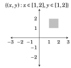
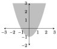
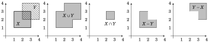
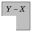
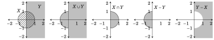
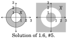
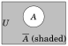
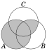
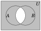

25. {...,\(\frac{1}{8}\),\(\frac{1}{4}\),\(\frac{1}{2}\),1,2,4,8,...} = {2n : n ∈ ℤ}
27. {...,−π,−\(\frac{\pi}{2}\) ,0,\(\frac{\pi}{2}\) ,π,\(\frac{3\pi}{2}\),2π,\(\frac{5\pi}{2}\),...} = : k ∈ ℤ
29. |{{1},{2,{3,4}},∅}| = 3
31. |{{{1},{2,{3,4}},∅}}| = 1
33. |{x ∈ ℤ : |x| < 10}| = 19
35. |{x ∈ ℤ : x2 < 10}| = 7

37. |{x ∈ ℕ : x2 < 0}| = 0
39.
41.
43.
45.{(x, y) : x, y ∈ ℝ, x2 + y2 = 1}
47.{(x, y) : x, y ∈ ℝ, y ≥ x2 −1}

49. {(x, x+ y) : x ∈ ℝ, y ∈ ℤ}
51. {(x, y) ∈ ℝ2 : (y− x)(y+ x) = 0}
Section 1.2
1. Suppose A = {1,2,3,4} and B = {a, c}. (a) A × B = {(1,a),(1, c),(2,a),(2, c),(3,a),(3, c),(4,a),(4, c)} (b) B × A = {(a,1),(a,2),(a,3),(a,4),(c,1),(c,2),(c,3),(c,4)} (c) A × A = {(1,1),(1,2),(1,3),(1,4),(2,1),(2,2),(2,3),(2,4), (3,1),(3,2),(3,3),(3,4),(4,1),(4,2),(4,3),(4,4)} (d) B × B = {(a,a),(a, c),(c,a),(c, c)} (e) ∅× B = {(a, b) : a ∈ ∅, b ∈ B} = ∅ (There are no ordered pairs (a, b) with a ∈ ∅.) (f) (A × B) × B = {((1,a),a),((1, c),a),((2,a),a),((2, c),a),((3,a),a),((3, c),a),((4,a),a),((4, c),a), ((1,a), c),((1, c), c),((2,a), c),((2, c), c),((3,a), c),((3, c), c),((4,a), c),((4, c), c)} (g) A × (B × B) = {(1,(a,a)),(1,(a, c)),(1,(c,a)),(1,(c, c)), (2,(a,a)),(2,(a, c)),(2,(c,a)),(2,(c, c)), (3,(a,a)),(3,(a, c)),(3,(c,a)),(3,(c, c)), (4,(a,a)),(4,(a, c)),(4,(c,a)),(4,(c, c))} (h) B3 = {(a,a,a),(a,a, c),(a, c,a),(a, c, c),(c,a,a),(c,a, c),(c, c,a),(c, c, c)}
B. Suppose that |A| = m and |B| = n. Find the following cardinalities:
13. |𝒫(𝒫(𝒫(A)))| = 2 2
15. |𝒫(A × B)| = 2mn
17. |{X ∈ 𝒫(A) : |X| ≤ 1}| = m + 1
19. |𝒫(𝒫(𝒫(A × ∅)))| = |𝒫(𝒫(𝒫(∅)))| = 4
Section 1.5
1. Suppose A = {4,3,6,7,1,9}, B = {5,6,8,4} and C = {5,8,4}. Find: (a) A ∪ B = {1,3,4,5,6,7,8,9} (f) A ∩ C = {4} (b) A ∩ B = {4,6} (g) B ∩ C = {5,8,4} (c) A − B = {3,7,1,9} (h) B ∪ C = {5,6,8,4} (d) A − C = {3,6,7,1,9} (e) B − A = {5,8} (i) C − B = ∅
3. Suppose A = {0,1} and B = {1,2}. Find: (a) (A × B) ∩ (B × B) = {(1,1),(1,2)} (b) (A × B) ∪ (B × B) = {(0,1),(0,2),(1,1),(1,2),(2,1),(2,2)} (c) (A × B) − (B × B) = {(0,1),(0,2)} (f) 𝒫(A) ∩ 𝒫(B) = {∅,{1}} (d) (A ∩ B) × A = {(1,0),(1,1)} (g) 𝒫(A) − 𝒫(B) = {{0},{0,1}} (e) (A × B) ∩ B = ∅ (h) 𝒫(A ∩ B) = {{},{1}} (i) {∅,{(0,1)},{(0,2)},{(1,1)},{(1,2)},{(0,1),(0,2)},{(0,1),(1,1)},{(0,1),(1,2)},{(0,2),(1,1)}, {(0,2),(1,2)},{(1,1),(1,2)},{(0,2),(1,1),(1,2)},{(0,1),(1,1),(1,2)},{(0,1),(0,2),(1,2)}, {(0,1),(0,2),(1,1)},{(0,1),(0,2),(1,1),(1,2)}}
5. Sketch the sets X = [1,3]×[1,3] and Y = [2,4]×[2,4] on the plane ℝ2. On separate drawings, shade in the sets X ∪ Y , X ∩ Y , X − Y and Y − X. (Hint: X and Y are Cartesian products of intervals. You may wish to review how you drew sets like [1,3] × [1,3] in the Section 1.2.)


7. Sketch the sets X = {(x, y) ∈ ℝ2 : x2 + y2 ≤ 1} and Y = {(x, y) ∈ ℝ2 : x ≥ 0} on ℝ2. On separate drawings, shade in the sets X ∪ Y , X ∩ Y , X − Y and Y − X.

9. The first statement is true. (A picture should convince you; draw one if necessary.) The second statement is false: Notice for instance that (0.5,0.5) is in the right-hand set, but not the left-hand set.
Section 1.6
1. Suppose A = {4,3,6,7,1,9} and B = {5,6,8,4} have universal set U = {n ∈ ℤ : 0 ≤ n ≤ 10}. (a) \(\overline{A}\) = {0,2,5,8,10} (f) A − \(\overline{B}\) = {4,6} (b) \(\overline{B}\) = {0,1,2,3,7,9,10} (g) A − B = {5,8} (c) A ∩ \(\overline{A}\) = ∅ (h) A ∩ B = {5,8} (d) A ∪ A = {0,1,2,3,4,5,6,7,8,9,10} = U(e) A − \(\overline{A}\) = A (i) \(\overline{A}\) ∩ B = {0,1,2,3,4,6,7,9,10}
3. Sketch the set X = [1,3] × [1,2] on the plane ℝ2. On separate drawings, shade in the sets \(\overline{X}\), and \(\overline{X}\) ∩ ([0,2] × [0,3]).
5. Sketch the set X = {(x, y) ∈ ℝ2 : 1 ≤ x2 + y2 ≤ 4} on the plane ℝ2. On a separate drawing, shade in the set \(\overline{X}\).


Solution of 1.7, #1.
Section 1.7
1. Draw a Venn diagram for \(\overline{A}\) (solution above right).
3. Draw a Venn diagram for (A − B) ∩ C. Scratch work is shown on the right. The set A−B is indicated with vertical shading. The set C is indicated with horizontal shading. The intersection of A − B and C is thus the overlapping region that is shaded with both vertical and horizontal lines. The final answer is drawn on the far right, where the set (A − B) ∩ C is shaded in gray.
5. Draw Venn diagrams for A ∪(B∩C) and (A ∪B)∩(A ∪C). Based on your drawings, do you think A ∪ (B ∩ C) = (A ∪ B) ∩ (A ∪ C)? If you do the drawings carefully, you will find

that your Venn diagrams are the same for both A ∪ (B ∩ C) and (A ∪ B) ∩ (A ∪ C). Each looks as illustrated on the right. Based on this, we are inclined to say that the equation A ∪ (B ∩ C) = (A ∪ B) ∩ (A ∪ C) holds for all sets A, B and C.
7. Suppose sets A and B are in a universal set U. Draw Venn diagrams for \(\overline{A \cap B}\) and \(\overline{A}\) ∪ \(\overline{B}\). Based on your drawings, do you think it’s true that \(\overline{A \cap B}\) = \(\overline{A}\) ∪ \(\overline{B}\)? The diagrams for \(\overline{A \cap B}\) and \(\overline{A}\) ∪ \(\overline{B}\) look exactly

alike. In either case the diagram is the shaded region illustrated on the right. Thus we would expect that the equation \(\overline{A \cap B}\) = \(\overline{A}\) ∪\(\overline{B}\) is true for any sets A and B.
9. Venn diagram for (A ∩ B) − C:
11. The simplest answer is (B ∩ C) − A.
13. One answer is (A ∪ B ∪ C) − (A ∩ B ∩ C).
Section 1.8
1. Suppose A1 = {a, b, d, e, g, f }, A2 = {a, b, c, d}, A3 = {b, d,a} and A4 = {a, b, h}. 4 4 (a) Ai = {a, b, c, d, e, f , g, h} (b) Ai = {a, b} i=1 i=1
3. For each n ∈ ℕ, let An = {0,1,2,3,..., n}. (a) Ai = {0} ∪ ℕ (b) Ai = {0,1} i∈ℕ i∈ℕ
5.(a) [i, i + 1] =[1,∞) (b) [i, i + 1] =∅ i∈ℕ i∈ℕ
7.(a) ℝ × [i, i + 1] = {(x, y) : x, y ∈ ℝ, y ≥ 1} (b) ℝ × [i, i + 1] = ∅ i∈ℕ i∈ℕ
9.(a) X = ℕ (b) X = ∅ X∈𝒫(ℕ) X∈𝒫(ℕ)
11. Yes, this is always true.
13. The first is true, the second is false.
Chapter 2 Exercises
Section 2.1
1. Every real number is an even integer. (Statement, False)
3. If x and y are real numbers and 5x = 5y, then x = y. (Statement, True)
5. Sets ℤ and ℕ are infinite. (Statement, True)
7. The derivative of any polynomial of degree 5 is a polynomial of degree 6. (Statement, False)
9. cos(x) = −1 This is not a statement. It is an open sentence because whether it’s true or false depends on the value of x.
11. The integer x is a multiple of 7. This is an open sentence, and not a statement.
13. Either x is a multiple of 7, or it is not. This is a statement, for the sentence is true no matter what x is.
15. In the beginning God created the heaven and the earth. This is a statement, for it is either definitely true or definitely false. There is some controversy over whether it’s true or false, but no one claims that it is neither true nor false.
Section 2.2
Express each statement as one of the forms P ∧Q, P ∨Q, or ∼ P. Be sure to also state exactly what statements P and Q stand for.
1. The number 8 is both even and a power of 2. P ∧QP: 8 is even Q: 8 is a power of 2 Note: Do not say “Q: a power of 2,” because that is not a statement.
3.x ≠ y ∼ (x = y) (Also ∼ P where P : x = y.)
5.y ≥ x ∼ (y < x) (Also ∼ P where P : y < x.)
7. The number x equals zero, but the number y does not. P∧∼ QP : x = 0 Q : y = 0
13. Human beings want to be good, but not too good, and not all the time. P∧∼ Q∧∼ RP : Human beings want to be good. Q : Human beings want to be too good. R : Human beings want to be good all the time.
Section 2.3
Without changing their meanings, convert each of the following sentences into a sentence having the form “If P, then Q.”
1. A matrix is invertible provided that its determinant is not zero. Answer: If a matrix has a determinant not equal to zero, then it is invertible.
3. For a function to be continuous, it is necessary that it is integrable. Answer: If a function is continuous, then it is integrable.
5. An integer is divisible by 8 only if it is divisible by 4. Answer: If an integer is divisible by 8, then it is divisible by 4.
7. A series converges whenever it converges absolutely. Answer: If a series converges absolutely, then it converges.
9. A function is integrable provided the function is continuous. Answer: If a function is continuous, then that function is integrable.
11. You fail only if you stop writing. Answer: If you fail, then you have stopped writing.
13. Whenever people agree with me I feel I must be wrong. Answer: If people agree with me, then I feel I must be wrong.
Section 2.4
Without changing their meanings, convert each of the following sentences into a sentence having the form “P if and only if Q.”
1. For a matrix to be invertible, it is necessary and sufficient that its determinant is not zero. Answer: A matrix is invertible if and only if its determinant is not zero.
3. If xy = 0 then x = 0 or y = 0, and conversely. Answer: xy = 0 if and only if x = 0 or y = 0
5. For an occurrence to become an adventure, it is necessary and sufficient for one to recount it. Answer: An occurrence becomes an adventure if and only if one recounts it.
Section 2.5
1. Write a truth table for P ∨ (Q ⇒ R)
3. Write a truth table for ∼ (P ⇒ Q)
5. Write a truth table for (P∧∼ P) ∨Q
7. Write a truth table for (P∧∼ P) ⇒ Q
9. Write a truth table for ∼ (∼ P∨∼ Q).
11. Suppose P is false and that the statement (R ⇒ S) ⇔ (P ∧ Q) is true. Find the truth values of R and S. (This can be done without a truth table.) Answer: Since P is false, it follows that (P ∧Q) is false also. But then in order for (R ⇒ S) ⇔ (P ∧Q) to be true, it must be that (R ⇒ S) is false. The only way for (R ⇒ S) to be false is if \(\boxed{R \text{ is true and } S \text{ is false.}}\)
Section 2.6
1.P ∧ (Q ∨ R) = (P ∧Q) ∨ (P ∧ R) P Q R Q ∨ R P ∧Q P ∧ R P ∧ (Q ∨ R) (P ∧Q) ∨ (P ∧ R) T T T T T T T TT T F T T F T TT F T T F T T TT F F F F F F FF T T T F F F FF T F T F F F FF F T T F F F FF F F F F F F F Thus since the columns agree, the two statements are logically equivalent.
3.P ⇒ Q = (∼ P) ∨Q Since the columns agree, the two statements are logically equivalent.
5. ∼ (P ∨Q ∨ R) = (∼ P) ∧ (∼ Q) ∧ (∼ R) P Q R P ∨Q ∨ R ∼ P ∼ Q ∼ R ∼ (P ∨Q ∨ R) (∼ P) ∧ (∼ Q) ∧ (∼ R) T T T T F F F F FT T F T F F T F FT F T T F T F F FT F F T F T T F FF T T T T F F F FF T F T T F T F FF F T T T T F F FF F F F T T T T T Since the columns agree, the two statements are logically equivalent.
7.P ⇒ Q = (P∧∼ Q) ⇒ (Q∧∼ Q) P Q ∼ Q P∧∼ Q Q∧∼ Q ∧∼ Q) ⇒ (Q∧∼ Q) P ⇒ QT T F F F T TT F T T F F FF T F F F T TF F T F F T T Since the columns agree, the two statements are logically equivalent.
9. By DeMorgan’s law, we have ∼ (∼ P∨∼ Q) =∼∼ P∧∼∼ Q = P ∧ Q. Thus the two statements are logically equivalent.
11. (∼ P) ∧ (P ⇒ Q) and ∼ (Q ⇒ P) P Q ∼ P P ⇒ Q Q ⇒ P ∼ (Q ⇒ P) T T F T T FT F F F T FF T T T F TF F T T T F The columns for the two statements do not quite agree, thus the two statements are not logically equivalent.
13.P ∨ (Q ∧ R) and (P ∨ Q) ∧ R are not logically equivalent because if P = T and Q = R = F, then the first statement is true and the second is false.
Section 2.7
Write the following as English sentences. Say if the statements are true or false.
1. ∀ x ∈ ℝ, x2 > 0 Answer: For every real number x, x2 > 0. Also: For every real number x, it follows that x2 > 0. Also: The square of any real number is positive. (etc.) Statement is false. Reason: 0 is a real number, but it’s not true that 02 > 0.
3. ∃a ∈ ℝ,∀ x ∈ ℝ,ax = x. Answer: There exists a real number a for which ax = x for every real number x. This statement is TRUE. Reason: Consider a = 1.
5. ∀ n ∈ ℕ,∃ X ∈ 𝒫(ℕ),|X| < n Answer: For every natural number n, there is a subset X of ℕ with |X| < n. This statement is TRUE. Reason: Suppose n ∈ ℕ. Let X = ∅. Then |X| = 0 < n.
7. ∀ X ⊆ ℕ,∃ n ∈ ℤ,|X| = n Answer: For any subset X of ℕ, there exists an integer n for which |X| = n. This statement is FALSE. For example, the set X = {2,4,6,8,...} of all even natural numbers is infinite, so there does not exist any integer n for which |X| = n.
9. ∀ n ∈ ℤ,∃ m ∈ ℤ, m = n + 5 Answer: For every integer n there is another integer m such that m = n + 5. This statement is TRUE.
Section 2.9
Translate each of the following sentences into symbolic logic.
1. If f is a polynomial and its degree is greater than 2, then f ′ is not constant. Translation: (P ∧Q) ⇒ R, where P : f is a polynomial, Q : f has degree greater than 2, R : f ′ is not constant.
3. If x is prime then \(\sqrt{x}\) is not a rational number. Translation: P ⇒∼ Q, where P : x is prime, Q : is a rational number.
5. For every positive number ε, there is a positive number δ for which |x − a| < δ implies |f (x) − f (a)| < ε. Translation: ∀ ε ∈ ℝ,ε > 0,∃ δ ∈ ℝ,δ > 0,(|x − a| < δ) ⇒ (|f (x) − f (a)| < ε)
7. There exists a real number a for which a + x = x for every real number x. Translation: ∃a ∈ ℝ,∀x ∈ ℝ,a + x = x
9. If x is a rational number and x ≠ 0, then tan(x) is not a rational number. Translation: ((x ∈ ℚ) ∧ (x ≠ 0)) ⇒ (tan(x) ∉ ℚ)
11. There is a Providence that protects idiots, drunkards, children and the United States of America. One translation is as follows. Let R be union of the set of idiots, the set of drunkards, the set of children, and the set consisting of the USA. Let P be the open sentence P(x): x is a Providence. Let S be the open sentence S(x, y): xprotects y. Then the translation is ∃ x,∀ y ∈ R,P(x) ∧ S(x, y). (Notice that, although this is mathematically correct, some humor has been lost in the translation.)
13. Everything is funny as long as it is happening to somebody else. Translation: ∀ x,(∼ M(x) ∧ S(x)) ⇒ F(x), where M(x): x is happening to me, S(x): x is happening to someone, and F(x) : xis funny.
Section 2.10
Negate the following sentences.
1. The number x is positive, but the number y is not positive. The “but” can be interpreted as “and.” Using DeMorgan’s law, the negation is: The number x is not positive or the number y is positive.
3. For every prime number p, there is another prime number q with q > p. Negation: There is a prime number p such that for every other prime number q,q ≤ p. Also: There exists a prime number p for which q ≤ p for every other primenumber q. (etc.)
5. For every positive number ε there is a positive number M for which |f (x) − b| < ε whenever x > M. To negate this, it may be helpful to first write it in symbolic form. The statement is ∀ε ∈ (0,∞),∃M ∈ (0,∞),(x > M) ⇒ (|f (x) − b| < ε). Working out the negation, we have ∼ (∀ε ∈ (0,∞),∃M ∈ (0,∞),(x > M) ⇒ (|f (x) − b| < ε)) = ∃ε ∈ (0,∞),∼ (∃M ∈ (0,∞),(x > M) ⇒ (|f (x) − b| < ε)) = ∃ε ∈ (0,∞),∀M ∈ (0,∞),∼ ((x > M) ⇒ (|f (x) − b| < ε)). Finally, using the idea from Example 2.15, we can negate the conditional statement that appears here to get ∃ε ∈ (0,∞),∀M ∈ (0,∞),∃x, (x > M)∧∼ (|f (x) − b| < ε). Negation: There exists a positive number ε with the property that for every positivenumber M, there is a number x for which x > M and |f (x) − b| ≥ ε.
7. I don’t eat anything that has a face. Negation: I will eat some things that have a face. (Note: If your answer was “I will eat anything that has a face.” then that is wrong, both morally and mathematically.)
9. If sin(x) < 0, then it is not the case that 0 ≤ x ≤ π. Negation: There exists a number x for which sin(x) < 0 and 0 ≤ x ≤ π.
11. You can fool all of the people all of the time. There are several ways to negate this, including: There is a person that you can’t fool all the time. or There is a person x and a time y for which x is not fooled at time y. (But Abraham Lincoln said it better.)
Chapter 3 Exercises
Section 3.2
1. Consider lists made from the letters T, H, E, O, R, Y, with repetition allowed. (a) How many length-4 lists are there? Answer: 6 · 6 · 6 · 6 = 1296. (b) How many length-4 lists are there that begin with T? Answer: 1 · 6 · 6 · 6 = 216. (c) How many length-4 lists are there that do not begin with T? Answer: 5 · 6 · 6 · 6 = 1080.
3. How many ways can you make a list of length 3 from symbols a,b,c,d,e,f if... (a) ... repetition is allowed. Answer: 6 · 6 · 6 = 216. (b) ... repetition is not allowed. Answer: 6 · 5 · 4 = 120. (c) ... repetition is not allowed and the list must contain the letter a. Answer: 5 · 4 + 5 · 4 + 5 · 4 = 60. (d) ... repetition is allowed and the list must contain the letter a. Answer: 6 · 6 · 6 − 5 · 5 · 5 = 91. (Note: See Example 3.3 if a more detailed explanation is required.)
5. This problems involves 8-digit binary strings such as 10011011 or 00001010. (i.e., 8-digit numbers composed of 0’s and 1’s.) (a) How many such strings are there? Answer: 2 · 2 · 2 · 2 · 2 · 2 · 2 · 2 = 256. (b) How many such strings end in 0? Answer: 2 · 2 · 2 · 2 · 2 · 2 · 2 · 1 = 128. (c) How many such strings have the property that their second and fourth digits are 1’s? Answer: 2 · 1 · 2 · 1 · 2 · 2 · 2 · 2 = 64. (d) How many such strings are such that their second or fourth digits are 1’s? Solution: These strings can be divided into three types. Type 1 consists of those strings of form ∗1∗0∗∗∗∗, Type 2 consist of strings of form ∗0∗1∗∗∗∗, and Type 3 consists of those of form ∗1∗1∗∗∗∗. By the multiplication principle there are 26 = 64 strings of each type, so there are 3 · 64 = 192 8-digit binarystrings whose second or fourth digits are 1’s.
7. This problem concerns 4-letter codes made from the letters A,B,C,D,...,Z. (a) How many such codes can be made? Answer: 26 · 26 · 26 · 26 = 456,976 (b) How many such codes have no two consecutive letters the same? Solution: We use the multiplication principle. There are 26 choices for the first letter. The second letter can’t be the same as the first letter, so there are only 25 choices for it. The third letter can’t be the same as the second letter, so there are only 25 choices for it. The fourth letter can’t be the same as the third letter, so there are only 25 choices for it. Thus there are 26 · 25 · 25 · 25 = 406,250codes with no two consecutive letters the same.
9. A new car comes in a choice of five colors, three engine sizes and two transmissions. How many different combinations are there? Answer 5 · 3 · 2 = 30.
Section 3.3
1. Five cards are dealt offof a standard 52-card deck and lined up in a row. How many such lineups are there that have at least one red card? Solution: All together there are 52 · 51 · 50 · 49 · 48 = 311875200 possible lineups. The number of lineups that do not have any red cards (i.e. are made up only of black cards) is 26 · 25 · 24 · 23 · 22 = 7,893,600. By the subtraction principle, the answer to the question is 311,875,200 − 7,893,600 = 303,981,600. How many such lineups are there in which the cards are all black or all hearts? Solution: The number of lineups that are all black is 26·25·24·23·22 = 7,893,600. The number of lineups that are hearts (which are red) is 13·12·11·10·9 = 154,440. By the addition principle, the answer to the question is 7,893,600 + 154,440 = 8,048,040.
3. Five cards are dealt offof a standard 52-card deck and lined up in a row. How many such lineups are there in which all 5 cards are of the same color (i.e., all black or all red)? Solution: There are 26 · 25 · 24 · 23 · 22 = 7,893,600 possible black-card lineups and 26·25·24·23·22 = 7,893,600 possible red-card lineups, so by the addition principle the answer is 7,893,600 + 7,893,600 = 15,787,200.
5. How many integers between 1 and 9999 have no repeated digits? Solution: Consider the 1-digit, 2-digit, 3-digit and 4-digit number separately. The number of 1-digit numbers that have no repeated digits is 9 (i.e., all of them). The number of 2-digit numbers that have no repeated digits is 9 · 9 = 81. (The number can’t begin in 0, so there are only 9 choices for its first digit.) The number of 3-digit numbers that have no repeated digits is 9 · 9 · 8 = 648. The number of 4-digit numbers that have no repeated digits is 9 · 9 · 8 · 7 = 4536. By the addition principle, the answer to the question is 9 + 81 + 648 + 4536 = 5274. How many integers between 1 and 9999 have at least one repeated digit? Solution: The total number of integers between 1 and 9999 is 9999. Using the subtraction principle, we can subtract from this the number of digits that have no repeated digits, which is 5274, as above. Therefore the answer to the question is 9999 − 5274 = 4725.
7. A password on a certain site must have five characters made from letters of the alphabet, and there must be at least one upper case letter. How many different passwords are there? Solution: Let U be the set of all possible passwords made from a choice of upper and lower case letters. Let X be the set of all possible passwords made from lower case letters. Then U −X is the set of passwords that have at least one upper case letter. By the subtraction principle our answer will be |U − X| = |U|−|X|. All together, there are 26 + 26 = 52 upper and lower case letters, so by the multiplication principle |U| = 52 · 52 · 52 · 52 · 52 = 525 = 380,204,032. Likewise |X| = 26 · 26 · 26 · 26 · 26 = 265 = 11,881,376. Thus the answer is |U|−|X| = 380,204,032 − 11,881,376 = 368,322,656. What if there must be a mix of upper and lower case? Solution: The number of passwords using only upper case letters is 265 = 11,881,376, and, as calculated above, this is also the number of passwords that use only lower case letters. By the addition principe, the number of passwords that use only lower case or only upper case is 11,881,376+11,881,376 = 23,762,752. By the subtraction principle, the number of passwords that use a mix of upper and lower case it the total number of possible passwords minus the number that use only lower case or only upper case, namely 380,204,032 − 23,762,752 = 356,441,280.
9. This problem concerns lists of length 6 made from the letters A,B,C,D,E,F,G,H. How many such lists are possible if repetition is not allowed and the list contains two consecutive vowels? Solution: There are just two vowels A and E to choose from. The lists we want to make can be divided into five types. They have one of the forms VV ∗∗∗∗, or ∗VV ∗∗∗, or ∗∗ VV ∗∗, or ∗∗∗VV∗, or ∗∗∗∗ VV , where V indicates a vowel and ∗ indicates a consonant. By the multiplication principle, there are 2·1·6·5·4·3 = 720 lists of form VV ∗∗∗∗. In fact, that for the same reason there are 720 lists of each form. Thus by the addition principle, the answer to the question is 720 + 720 + 720 + 720 + 720 = 3600
11. How many integers between 1 and 1000 are divisible by 5? How many are not? Solution: The integers that are divisible by 5 are 5,10,15,20,...,995,1000. There are 1000/5 = 200 such numbers. By the subtraction principle, the number that are not divisible by 5 is 1000 − 200 = 800.
9. How many permutations of the letters A,B,C,D,E,F,G are there in which the three letters ABC appear consecutively, in alphabetical order? Solution: Regard ABC as a single symbol Then we are looking for the number of permutations of the five symbols , D, E, F, G. The number of such permutations is 5! = 120.
11. You deal 7 cards offof a 52-card deck and line them up in a row. How many possible lineups are there in which not all cards are red? Solution: All together, there are P(52,7) 7-card lineups with cards selected from the entire deck. And there are P(26,7) 7-card lineups with red cards selected from the 26 red cards in the deck. By the subtraction principle, the number of lineups that are not all red is P(52,7) − P(26,7) = 670,958,870,400.
13.P(26,6) = 165,765,600
15.P(15,4) = 32,760
17.P(10,3) = 720
Section 3.5
1. Suppose a set A has 37 elements. How many subsets of A have 10 elements? How many subsets have 30 elements? How many have 0 elements? Answers: \(\binom{37}{10}\)= 348,330,136; \(\binom{37}{30}\)= 10,295,472; \(\binom{37}{0}\)= 1.
3. A set X has exactly 56 subsets with 3 elements. What is the cardinality of X? Solution: The answer will be the n for which \(\binom{n}{3}\)= 56. After some trial and error, you will discover \(\binom{8}{3}\)= 56, so |X| = 8.
5. How many 16-digit binary strings contain exactly seven 1’s? Solution: Make such a string as follows. Start with a list of 16 blank spots. Choose 7 of the blank spots for the 1’s and put 0’s in the other spots. There are \(\binom{16}{7}\)= 11,440 ways to do this.
9. This problem concerns lists of length six made from the letters A,B,C,D,E,F, without repetition. How many such lists have the property that the D occurs before the A? Solution: Make such a list as follows. Begin with six blank spaces and select two of these spaces. Put the D in the first selected space and the A in the second. There are \(\binom{6}{2}\) = 15 ways of doing this. For each of these 15 choices there are 4! = 24 ways of filling in the remaining spaces. Thus the answer to the question is 15 × 24 = 360 such lists.
11. How many 10-digit integers contain no 0’s and exactly three 6’s? Solution: Make such a number as follows: Start with 10 blank spaces and choose three of these spaces for the 6’s. There are \(\binom{10}{3}\) = 120 ways of doing this. For each of these 120 choices we can fill in the remaining seven blanks with choices from the digits 1,2,3,4,5,7,8,9, and there are 87 to do this. Thus the answer to the question is \(\binom{10}{3}\)· 87 = 251,658,240.
13. Assume n, k ∈ ℤ with 0 ≤ k ≤ n. Then \(\binom{n}{k}\)= \(\frac{n!}{(n-k)!k!}\) = \(\frac{n!}{k!(n-k)!}\) = \(\frac{n!}{(n-(n-k))!(n-k)!}\) = \(\binom{n}{n-k}\).
15. How many 10-digit binary strings are there that do not have exactly four 1’s? Solution: All together, there are 210 different binary strings. The number of 10-digit binary strings with exactly four 1’s is \(\binom{10}{4}\), because to make one we need to choose 4 out of 10 positions for the 1’s and fill the rest in with 0’s. By the subtraction principle, the answer to our questions is 210 − \(\binom{10}{4}\).
17. How many 10-digit binary numbers are there that have exactly four 1’s or exactly five 1’s? Solution: By the addition principle the answer is \(\binom{10}{4}\)+ \(\binom{10}{5}\). How many do not have exactly four 1’s or exactly five 1’s? Solution: By the subtraction principle combined with the answer to the first part of this problem, the answer is 210 − \(\binom{10}{4}\)− \(\binom{10}{5}\)
19. A 5-card poker hand is called a flush if all cards are the same suit. How many different flushes are there? Solution: There are \(\binom{13}{5}\)= 1287 5-card hands that are all hearts. Similarly, there are \(\binom{13}{5}\)= 1287 5-card hands that are all diamonds, or all clubs, or all spades. By the addition principle, there are then 1287 + 1287 + 1287 + 1287 = 5148 flushes.
3. Use the binomial theorem to find the coefficient of x8 in (x + 2)13. Answer: According to the binomial theorem, the coefficient of x8 y5 in (x + y)13 is \(\binom{13}{5}\)x8 y5 = 1287x8 y5. Now plug in y = 2 to get the final answer of 41184x8.
5. Use the binomial theorem to show \(\sum_{k=0}^{n} \binom{n}{k}\)= 2n. Hint: Observe that 2n = (1 + 1)n. Now use the binomial theorem to work out (x + y)n and plug in x = 1 and y = 1.
7. Use the binomial theorem to show 3= 4n. Hint: Observe that 4n = (1 + 3)n. Now look at the hint for the previous problem.
9. Use the binomial theorem to show \(\binom{n}{0}\)−\(\binom{n}{1}\)+\(\binom{n}{2}\)−\(\binom{n}{3}\)+\(\binom{n}{4}\)−\(\binom{n}{5}\)+...±\(\binom{n}{n}\)= 0. Hint: Observe that 0 = 0n = (1 + (−1))n. Now use the binomial theorem.
11. Use the binomial theorem to show 9n = (−1)10n−k. Hint: Observe that 9n = (10 + (−1))n. Now use the binomial theorem.
13. Assume n ≥ 3. Then \(\binom{n}{3}\)= \(\binom{n-1}{3}\)+\(\binom{n-1}{2}\)= \(\binom{n-2}{3}\)+\(\binom{n-2}{2}\)+\(\binom{n-1}{2}\)= ··· = \(\binom{2}{2}\)+\(\binom{3}{2}\)+···+\(\binom{n-1}{2}\).
Section 3.7
1. At a certain university 523 of the seniors are history majors or math majors (or both). There are 100 senior math majors, and 33 seniors are majoring in both history and math. How many seniors are majoring in history? Solution: Let A be the set of senior math majors and B be the set of senior history majors. From |A ∪ B| = |A| + |B| −|A ∩ B| we get 523 = 100 + |B| − 33, so |B| = 523 + 33 − 100 = 456. There are 456 history majors.
3. How many 4-digit positive integers are there that are even or contain no 0’s? Solution: Let A be the set of 4-digit even positive integers, and let B be the set of 4-digit positive integers that contain no 0’s. We seek |A∪B|. By the multiplication principle |A| = 9 · 10 · 10 · 5 = 4500. (Note the first digit cannot be 0 and the last digit must be even.) Also |B| = 9·9·9·9 = 6561. Further, A ∩ B consists of all even 4-digit integers that have no 0’s. It follows that |A ∩B| = 9·9·9·4 = 2916. Then the answer to our question is |A ∪ B| = |A|+|B|−|A ∩ B| = 4500 + 6561 − 2916 = 8145.
5. How many 7-digit binary strings begin in 1 or end in 1 or have exactly four 1’s? Solution: Let A be the set of such strings that begin in 1. Let B be the set of such strings that end in 1. Let C be the set of such strings that have exactly four 1’s. Then the answer to our question is |A ∪ B ∪ C|. Using Equation (3.5) to compute this number, we have |A∪B∪C| = |A|+|B|+|C|−|A∩B|−|A∩C|−|B∩C|+|A∩B∩C| = 26 + 26 + \(\binom{7}{4}\)− 25 − \(\binom{6}{3}\)− \(\binom{6}{3}\)+ \(\binom{5}{2}\)= 64 + 64 + 35 − 32 − 20 − 20 + 10 = 101.
7. This problem concerns 4-card hands dealt offof a standard 52-card deck. How many 4-card hands are there for which all four cards are of the same suit or all four cards are red? Solution: Let A be the set of 4-card hands for which all four cards are of the same suit. Let B be the set of 4-card hands for which all four cards are red. Then A ∩ B is the set of 4-card hands for which the four cards are either all hearts or all diamonds. The answer to our question is |A ∪B| = |A|+|B|−|A ∩B| = 4\(\binom{13}{4}\)+ \(\binom{26}{4}\)− 2\(\binom{13}{4}\)= 2\(\binom{13}{4}\)+ \(\binom{26}{4}\)= 1430 + 14,950 = 16,380.
9. A 4-letter list is made from the letters L,I,S,T,E,D according to the following rule: Repetition is allowed, and the first two letters on the list are vowels or the list ends in D. How many such lists are possible? Solution: Let A be the set of such lists for which the first two letters are vowels, so |A| = 2·2·6·6 = 144. Let B be the set of such lists that end in D, so |B| = 6·6·6·1 = 216. Then A ∩ B is the set of such lists for which the first two entries are vowels and the list ends in D. Thus |A ∩ B| = 2 · 2 · 6 · 1 = 24. The answer to our question is |A ∪ B| = |A|+|B|−|A ∩ B| = 144 + 216 − 24 = 336.
11. How many 7-digit numbers are even or have exactly three digits equal to 0? Solution: Let A be the set of 7-digit numbers that are even. By the multiplication principle, |A| = 9·10·10·10·10·10·5 = 4,500,000. Let B be the set of 7-digit numbers that have exactly three digits equal to 0. Then |B| = 9 · \(\binom{6}{3}\)· 9 · 9 · 9. (First digit is anything but 0. Then choose 3 of 6 of the remaining places in the number for the 0’s. Finally the remaining 3 places can be anything but 0.) Note A ∩ B is the set of 7-digit numbers that are even and contain exactly three 0’s. We can compute |A ∩ B| with the addition principle, by dividing A ∩ B into two parts: the even 7-digit numbers with three digits 0 and the last digit is not 0, and the even 7-digit numbers with three digits 0 and the last digit is 0. The first part has 9·\(\binom{5}{3}\)·9·9·4 elements. The second part has 9·\(\binom{5}{2}\)·9·9·9·1 elements. Thus |A ∩ B| = 9 · \(\binom{5}{3}\)· 9 · 9 · 4 + 9 · \(\binom{5}{2}\)· 9 · 9 · 9. By the inclusion-exclusion formula, the answer to our question is |A ∪ B| = |A|+ |B|−|A ∩ B| = 4,500,000 + 9− 9· 4 − 9= 4,536,450.
13. How many 8-digit binary strings end in 1 or have exactly four 1’s? Solution: Let A be the set of strings that end in 1. By the multiplication principle |A| = 27. Let B be the number of strings with exactly four 1’s. Then |B| = \(\binom{8}{4}\) because we can make such a string by choosing 4 of 8 spots for the 1’s and filling the remaining spots with 0’s. Then A ∩ B is the set of strings that end with 1 and have exactly four 1’s. Note that |A ∩ B| = \(\binom{7}{4}\) (make the last entry a 1 and choose 3 of the remaining 7 spots for 1’s). By the inclusion-exclusion formula, the number 8-digit binary strings that end in 1 or have exactly four 1’s is |A ∪ B| = |A|+|B|−|A ∩ B| = 27 + \(\binom{8}{4}\)− \(\binom{7}{3}\)= 163.
15. How many 10-digit binary strings begin in 1 or end in 1? Solution: Let A be the set of strings that begin with 1. By the multiplication principle |A| = 29. Let B be the number of strings that end with 1. By the multiplication principle |B| = 29. Then A ∩ B is the set of strings that begin and end with 1. By the multiplication principle |A ∩ B| = 28. By the inclusion-exclusion formula, the number 10-digit binary strings begin in 1 or end in 1 is |A ∪ B| = |A|+|B|−|A ∩ B| = 29 + 29 − 28 = 768.
Section 3.8
1. How many 10-element multisets can be made from the symbols {1,2,3,4}? Answer: \(\binom{10+4-1}{10}\)= \(\binom{13}{10}\)= 286.
3. You have a dollar in pennies, a dollar in nickels, a dollar in dimes and a dollar in quarters. You give four coins to a friend. In how many ways can this be done? Solution: In giving your friend four coins, you are giving her a 4-element multiset made from elements in {1,5,10,25}. There are \(\binom{4+4-1}{4}\)= \(\binom{7}{4}\)= 35 such multisets.
5. A bag contains 20 identical red balls, 20 identical blue balls, 20 identical green balls, and one white ball. You reach in and grab 15 balls. How many different outcomes are possible? Solution: First we count the number of outcomes that don’t have a white ball. Modeling this with stars and bars, we are looking at length-17 lists of the form red blue green , where there are 15 stars and two bars. Therefore there are \(\binom{17}{15}\) outcomes without the white ball. Next we count the outcomes that do have the white ball. Then there are 14 remaining balls in the grab. In counting the ways that they can be selected we can use the same stars-and-bars model above, but this time the list is of length 16 and has 14 stars. There are \(\binom{16}{14}\) outcomes. Finally, by the addition principle, the answer to the question is \(\binom{17}{15}\)+ \(\binom{16}{14}\)= 256.
7. In how many ways can you place 20 identical balls into five different boxes? Solution: Let’s model this with stars and bars. Doing this we get a list of length 24 with 20 stars and 4 bars, where the first grouping of stars has as many stars as balls in Box 1, the second grouping has as many stars as balls in Box 2, and so on. Box 1 Box 2 Box 3 Box 4 Box 5 , The number of ways to place 20 balls in the five boxes equals the number of such lists, which is \(\binom{24}{20}\)= 10,626.
9. A bag contains 50 pennies, 50 nickels, 50 dimes and 50 quarters. You reach in and grab 30 coins. How many different outcomes are possible? Solution: The stars-and-bars model is pennies nickels dimes quarters , so there are \(\binom{33}{30}\)= 5456 outcomes.
11. How many integer solutions does the equation w + x + y + z = 100 have if w ≥ 4, x ≥ 2, y ≥ 0 and z ≥ 0? Solution: Imagine a bag containing 100 red balls, 100 blue balls, 100 green balls and 100 white balls. Each solution of the equation corresponds to an outcome in selecting 100 balls from the bag, where the selection includes w ≥ 4 red balls, x ≥ 2 blue balls, y ≥ 0 green balls and z ≥ 0 white balls. Now let’s consider making such a selection. Pre-select 4 red balls and 2 blue balls, so 94 balls remain in the bag. Next the remaining 94 balls are selected. We can calculate the number of ways that this selection can be made with stars and bars, where there are 94 stars and 3 bars, so the list’s length is 97. red blue green white , The number of outcomes is thus \(\binom{97}{3}\)= 147,440.
13. How many length-6 lists can be made from the symbols {a, b, c, d, e, f, g}, if repetition is allowed and the list is in alphabetical order? Solution: Any such list corresponds to a 6-element multiset made from the symbols {a, b, c, d, e, f, g}. For example, the list aacddg corresponds to the multiset [a,a,c,d,d,g]. Thus the number of lists equals the number of multisets, which is \(\binom{6+7-1}{6}\)= \(\binom{12}{6}\)= 924.
15. How many permutations are there of the letters in the word “TENNESSEE”? Solution: By Fact 3.8, the answer is \(\frac{9!}{4!2!2!}\) = 3,780.
17. You roll a dice six times in a row. How many possible outcomes are there that have two 1’s three 5’s and one 6? Solution: This is the number of permutations of the Fact 3.8, the answer is \(\frac{6!}{2!3!1!}\) = 60.
19. In how many ways can you place 15 identical balls into 20 different boxes if each box can hold at most one ball? Solution: Regard each such distribution as a binary string of length 20, where there is a 1 in the ith position precisely if the ith box contains a ball (and zeros elsewhere). The answer is the number of permutations of such a string, which by Fact 3.8 is \(\frac{20!}{15!5!}\) =15,504. Alternatively, the answer is the number of ways to choose 15 positions out of 20, which is \(\binom{20}{15}\)= 15,504.
21. How many numbers between 10,000 and 99,999 contain one or more of the digits 3, 4 and 8, but no others? Solution: First count the numbers that have three 3’s, one 4, and one 8, like 33,348. By Fact 3.8, the number of permutations of this is \(\frac{5!}{3!1!1!}\) = 20. By the same reasoning there are 20 numbers that contain three 4’s, one 3, and one 8, and 20 numbers that contain three 8’s, one 3, and one 4. Next, consider the numbers that have two 3’s, two 4’s and one 8, like 33,448. By Fact 3.8, the number of permutations of this is \(\frac{5!}{2!2!1!}\) = 30. By the same reasoning there are 30 numbers that contain two 3’s, two 8’s and one 4, and 30 numbers that contain two 4’s, two 8’s and one 3. This exhausts all possibilities. By the addition principle the answer is 20+20+20+30+30+30 = 150.
Section 3.9
1. Show that if 6 integers are chosen at random, at least two will have the same remainder when divided by 5. Solution: Pick six integers n1, n2, n3, n4, n5 and n6 at random. Imagine five boxes, labeled Box 0, Box 1, Box 2, Box 3, Box 4. Each of the picked integers has a remainder when divided by 5, and that remainder is 0, 1, 2, 3 or 4. For each ni, let ri be its remainder when divided by 5. Put ni in Box ri. We have now put six numbers in five boxes, so by the pigeonhole principle one of the boxes has two or more of the picked numbers in it. Those two numbers have the same remainder when divided by 5.
3. What is the fewest number of times you must roll a six-sided dice before you can be assured that 10 or more of the rolls resulted in the same number? Solution: Imagine six boxes, labeled 1 through 6.Every time you roll a an object in Box 1. Every time you roll a, put an object in Box 2, etc. After n rolls, the division principle says that one box contains ⌈\(\frac{n}{6}\) ⌉ objects, and this means you rolled the same number ⌈\(\frac{n}{6}\) ⌉ times. We seek the smallest n for which ⌈\(\frac{n}{6}\) ⌉≥ 10. This is the smallest n for which\(\frac{n}{6}\) > 9, that is n > 9 · 6 = 54. Thus the answer is n = 55. You need to roll the dice 55 times.
5. Prove that any set of 7 distinct natural numbers contains a pair of numbers whose sum or difference is a multiple of 10. Solution: Let S be any set of 7 natural numbers. We want to show the sum or difference of two of them is a multiple of 10. Take six boxes labeled as follows: 2, 8 Notice that if a boxnumbersup to 10. Take the numbers from S and put them into the boxes in the following way: For each x ∈ S, look at its rightmost (one’s) digit, and put it in the box that has that digit on it. (For example, put 253 in box Also put 17 and 13 into 3,7 . Put 91 in 1,9 ; put 55 inand put 100 into Because S has more elements than there are boxes, at least one box will contain two (or more) numbers. Take two numbers x and y that are in the same box. If their rightmost digits happen to be the same, then the rightmost digit of the difference x− y is 0, so this difference is a multiple of 10. On the other hand, if their right-most digits are different, then because they are in the same box, their rightmost digits sum to 10. Therefore the rightmost digit of the sum x + y is 0, so the sum is a multiple of 10.
Section 3.10
1. Show that 1(n − 0) + 2(n − 1) + 3(n − 2) + 4(n − 3) +···+ (n − 1)2 + (n − 0)1 = \(\binom{n+2}{3}\). Solution: Let S = {0,1,2,3,..., n, n + 1}, which is a set with n + 2 elements. The right-hand side \(\binom{n+2}{3}\) of our equations is the number of 3-element subsets of S. Let’s now count these 3-element subsets in a different way. Any such subset X can be written as X = { j, k,ℓ}, where 0 ≤ j < k < ℓ ≤ n + 1. Note that this forces the middle element k to be in the range 1 ≤ k ≤ n. Given a fixed middle element k, there are k choices for the smallest element j and n+1− k choices for the largest element ℓ. 0 1 2 ··· k − 1 k k + 1 k + 2 k + 3 ··· n n + 1 \(\overbrace{k\text{ choices for }j}\) ↑ \(\overbrace{n+1-k\text{ choices for }\ell}\) middle n+1− k choices for ℓ By the multiplication principle, there are k(n + 1 − k) possible 3-element sets X with middle element k. For example, if k = 1, there are 1(n − 0) sets X with middle element 1. If k = 2, there are 2(n − 1) sets X with middle element 2. If k = 3, there are 3(n − 2) sets X with middle element 3. Thus the left-hand side of our equation counts up the number of 3-element subsets of S, so it is equal to the right-hand side.
3. Show that \(\binom{n}{2}\binom{n-2}{k-2}\)= \(\binom{n}{k}\binom{k}{2}\). Solution: Consider the following problem. From a group of n people, you need to select k people to serve on a committee, and you also need to select 2 of these k people to lead the committee’s discussion. In how many ways can this be done? One approach is to first select k people from n, and then select 2 of these k people to lead the discussion. By the multiplication principle, there are \(\binom{n}{k}\binom{k}{2}\) ways to make this selection. Another approach is to first select 2 of the n people to be the discussion leaders, and there are \(\binom{n}{2}\) ways to do this. Next we need to fill out the committee by selecting k − 2 people from the remaining n − 2 people, and there are \(\binom{n-2}{k-2}\) ways to do this. By the multiplication principle, there are \(\binom{n}{2}\binom{n-2}{k-2}\) ways to make the selection. By the previous two paragraphs, \(\binom{n}{2}\binom{n-2}{k-2}\) and \(\binom{n}{k}\binom{k}{2}\) are both answers to the same counting problem, so they are equal.
5. Show that \(\binom{2n}{2}\)= 2\(\binom{n}{2}\)+ n2. Solution: Let S be a set with 2n elements. Then the left-hand side counts the number of 2-element subsets of S. Let’s now count this in a different way. Split S as S = A∪B, where |A| = n = |B|. We can choose a 2-element subset of S in three ways: We could choose both elements from A, and there are \(\binom{n}{2}\) ways to do this. We could choose both elements from B, and there are \(\binom{n}{2}\) ways to do this. Or we could choose one element from A and then another element from B, and by the multiplication principle there are n · n = n2 ways to do this. Thus the number of 2-element subsets of S is \(\binom{n}{2}\)+ \(\binom{n}{2}\)+ n2 = 2\(\binom{n}{2}\)+ n2, and this is the right-hand side. Therefore the equation holds because both sides count the same thing. p
7. Show that \(\sum\) \(\binom{m}{k}\binom{n}{p-k}\)= \(\binom{m+n}{p}\). k=0 Solution: Take three non-negative integers m, n and p. Let S be a set with |S| = m + n, so the right-hand side counts the number of p-element subsets of S. Now let’s count this in a different way. Split S as S = A ∪ B, where |A| = m and |B| = n. We can make any p-element subset of S by choosing k of its elements from A in and p − k of its elements from B, for any 0 ≤ k ≤ p. There are \(\binom{m}{k}\) ways to choose k elements from A, and \(\binom{n}{p-k}\) ways to choose p − k elements from B, so there are \(\binom{m}{k}\binom{n}{p-k}\) ways to make a p-element subset of S that has k elements from A. As k could be any number between 0 and p, the left-hand side of our equation counts up the p-element subsets of S. Thus the left- and right-hand sides count the same thing, so they are equal. n k n+1
9. Show that (m) = (m+1). k=m Solution: Let S = {0,1,2,..., n}, so |S| = n + 1. The right-hand side of our equation is the number of subsets X of S with m + 1 elements. Now let’s think of a way to make such an X ⊆ S with |X| = m + 1. We could begin by selecting a largest element k for X. Now, once we have chosen k, there are k elements in S to the left of k, and we need to choose m of them to go in X (so these, along with k, form the set X). S = { 0, 1, 2, 3, 4, 5, ··· , k − 1, k, k + 1, k + 2, k + 3, ··· , n } \(\overbrace{\text{choose }m\text{ of these }k\text{ numbers for }X}\) ↑ largest number in X There are \(\binom{k}{m}\) ways to choose these m numbers, so there are \(\binom{k}{m}\) subsets of S whose largest element is k. Notice that we must have m ≤ k ≤ n. (The largest element k of X cannot be smaller than m because we need at least m elementsn on its left.) Summing over all possible largest values in X, we see that \(\binom{k}{m}\) k=m equals the number of subsets of S with m + 1 elements. n k n+1 The previous two paragraphs show that (m) and (m+1) are answers to the k=m same counting question, so they are equal. n n
11. Show that \(\sum\) 2k(k) = 3n. k=0 Solution: Consider the problem of counting the number of length-n lists made from the symbols {a, b, c}, with repetition allowed. There are 3n such lists, so the right-hand side counts the number of such lists. On the other hand, given k with 0 ≤ k ≤ n, let’s count the lists that have exactly k entries unequal to a. There are 2\(k\binom{n}{k}\) such lists. (First choose k of n list positions to be filled with b or c, in \(\binom{n}{k}\) ways. Then fill these k positions with b’s and c’s in 2k ways. Fill any remaining positions with a’s.) As k could be any number between 0 and n, the left-hand side of our equation counts up the number of length-n lists made from the symbols {a, b, c}. Thus the right- and left-hand sides count the same thing, so they are equal.
Chapter 4 Exercises
1. If x is an even integer, then x2 is even. Proof. Suppose x is even. Thus x = 2a for some a ∈ ℤ. Consequently x2 = (2a)2 = 4a2 = 2(2a2). Therefore x2 = 2b, where b is the integer 2a2. Thus x2 is even by definition of an even number. ■
3. If a is an odd integer, then a2 + 3a + 5 is odd. Proof. Suppose a is odd. Thus a = 2c + 1 for some integer c, by definition of an odd number. Then a2 + 3a + 5 = (2c + 1)2 + 3(2c + 1) + 5 = 4c2 + 4c + 1 + 6c + 3 + 5 = 4c2 + 10c + 9 = 4c2 + 10c + 8 + 1 = 2(2c2 + 5c + 4) + 1. This shows a2 + 3a + 5 = 2b + 1, where b = 2c2 + 5c + 4 ∈ ℤ. Therefore a2 + 3a + 5 is odd. ■
5. Suppose x, y ∈ ℤ. If x is even, then xy is even. Proof. Suppose x, y ∈ ℤ and x is even. Then x = 2a for some integer a, by definition of an even number. Thus xy = (2a)(y) = 2(ay). Therefore xy = 2b where b is the integer ay, so xy is even. ■
7. Suppose a, b ∈ ℤ. If a | b, then a2 | b2. Proof. Suppose a | b. By definition of divisibility, this means b = ac for some integer c. Squaring both sides of this equation produces b2 = a2c2. Then b2 = a2d, where d = c2 ∈ ℤ. By definition of divisibility, this means a2 | b2. ■
9. Suppose a is an integer. If 7 | 4a, then 7 | a. Proof. Suppose 7 | 4a. By definition of divisibility, this means 4a = 7c for some integer c. Since 4a = 2(2a) it follows that 4a is even, and since 4a = 7c, we know 7c is even. But then c can’t be odd, because that would make 7c odd, not even. Thus c is even, so c = 2d for some integer d. Now go back to the equation 4a = 7c and plug in c = 2d. We get 4a = 14d. Dividing both sides by 2 gives 2a = 7d. Now, since 2a = 7d, it follows that 7d is even, and thus d cannot be odd. Then d is even, so d = 2e for some integer e. Plugging d = 2e back into 2a = 7d gives 2a = 14e. Dividing both sides of 2a = 14e by 2 produces a = 7e. Finally, the equation a = 7e means that 7 | a, by definition of divisibility. ■
11. Suppose a, b, c, d ∈ ℤ. If a | b and c | d, then ac | bd. Proof. Suppose a | b and c | d. As a | b, the definition of divisibility means there is an integer x for which b = ax. As c | d, the definition of divisibility means there is an integer y for which d = cy. Since b = ax, we can multiply one side of d = cy by b and the other by ax. This gives bd = axcy, or bd = (ac)(xy). Since xy ∈ ℤ, the definition of divisibility applied to bd = (ac)(xy) gives ac | bd. ■
13. Suppose x, y ∈ ℝ. If x2 + 5y = y2 + 5x, then x = y or x + y = 5. Proof. Suppose x2 + 5y = y2 + 5x. Then x2 − y2 = 5x − 5y, and factoring gives (x − y)(x + y) = 5(x − y). Now consider two cases. Case 1. If x− y ≠ 0 we can divide both sides of (x− y)(x+ y) = 5(x− y) by the non-zero quantity x − y to get x + y = 5. Case 2. If x − y = 0, then x = y. (By adding y to both sides.) Thus x = y or x + y = 5. ■
15. If n ∈ ℤ, then n2 + 3n + 4 is even. Proof. Suppose n ∈ ℤ. We consider two cases. Case 1. Suppose n is even. Then n = 2a for some a ∈ ℤ. Therefore n2 + 3n + 4 = (2a)2 + 3(2a) + 4 = 4a2 + 6a + 4 = 2(2a2 + 3a + 2). So n2 + 3n + 4 = 2b where b = 2a2 + 3a + 2 ∈ ℤ, so n2 + 3n + 4 is even. Case 2. Suppose n is odd. Then n = 2a + 1 for some a ∈ ℤ. Therefore n2 +3n+4 = (2a+1)2 +3(2a+1)+4 = 4a2 +4a+1+6a+3+4 = 4a2 +10a+8 = 2(2a2 +5a+4). So n2 +3n+4 = 2b where b = 2a2 +5a+4 ∈ ℤ, so n2 +3n+4 is even. In either case n2 + 3n + 4 is even. ■
17. If two integers have opposite parity, then their product is even. Proof. Suppose a and b are two integers with opposite parity. Thus one is even and the other is odd. Without loss of generality, suppose a is even and b is odd. Therefore there are integers c and d for which a = 2c and b = 2d + 1. Then the product of a and b is ab = 2c(2d + 1) = 2(2cd + c). Therefore ab = 2k where k = 2cd + c ∈ ℤ. Therefore the product ab is even. ■
19. Suppose a, b, c ∈ ℤ. If a2 | b and b3 | c then a6 | c. Proof. Since a2 | b we have b = ka2 for some k ∈ ℤ. Since b3 | c we have c = hb3 for some h ∈ ℤ. Thus c = h(ka2)3 = hk3a6. Hence a6 | c. ■
21. If p is prime and 0 < k < p then p | \(\binom{p}{k}\). Proof. From the formula \(\binom{p}{k}\) = \(\frac{p!}{(p-k)!k!}\), we get p! = \(\binom{p}{k}\)(p − k)!k!. Now, since the prime number p is a factor of p! on the left, it must also be a factor of \(\binom{p}{k}\)(p−k)!k! on the right. Thus the prime number p appears in the prime factorization of \(\binom{p}{k}\)(p − k)!k!. As k! is a product of numbers smaller than p, its prime factorization contains no p’s. Similarly the prime factorization of (p−k)! contains no p’s. But we noted that the prime factorization of \(\binom{p}{k}\)(p−k)!k! must contain a p, so the prime factorization of \(\binom{p}{k}\) contains a p. Thus \(\binom{p}{k}\) is a multiple of p, so p divides \(\binom{p}{k}\). ■
23. If n ∈ ℕ then \(\binom{2n}{n}\) is even. Proof. By definition, \(\binom{2n}{n}\) is the number of n-element subsets of a set A with 2n elements. For each subset X ⊆ A with |X| = n, the complement \(\overline{X}\) is a different set, but it also has 2n − n = n elements. Imagine listing out all the n-element subsets of a set A. It could be done in such a way that the list has form X1, \(\overline{X_1}\), X2, \(\overline{X_2}\), X3, \(\overline{X_3}\), X4, \(\overline{X_4}\), X5, \(\overline{X_5}\) ... This list has an even number of items, for they are grouped in pairs. Thus \(\binom{2n}{n}\) is even. ■
25. If a, b, c ∈ ℕ and c ≤ b ≤ a then \(\binom{a}{b}\binom{b}{c}\)= \(\binom{a}{b-c}\binom{a-b+c}{c}\). Proof. Assume a, b, c ∈ ℕ with c ≤ b ≤ a. Then we have \(\binom{a}{b}\binom{b}{c}\) = \(\frac{a!}{(a-b)!b!}\) \(\frac{b!}{(b-c)!c!}\) = \(\frac{a!}{(a-b+c)!(a-b)!}\) \(\frac{(a-b+c)!}{(b-c)!c!}\) = \(\frac{a!}{(b-c)!(a-b+c)!}\) \(\frac{(a-b+c)!}{(a-b)!c!}\) = \(\binom{a}{b-c}\binom{a-b+c}{c}\). ■
27. Suppose a, b ∈ ℕ. If gcd(a, b) > 1, then b | a or b is not prime. Proof. Suppose gcd(a, b) > 1. Let c = gcd(a, b) > 1. Then since c is a divisor of both a and b, we have a = cx and b = cy for integers x and y. We divide into two cases according to whether or not b is prime. Case I. Suppose b is prime. Then the above equation b = cy with c > 1 forces c = b and y = 1. Then a = cx becomes a = bx, which means b | a. We conclude that the statement “b | a or b is not prime,” is true. Case II. Suppose b is not prime. Then the statement “b | a or b is not prime,” is automatically true. ■
Chapter 5 Exercises
1. Suppose n ∈ ℤ. If n2 is even, then n is even. Proof. (Contrapositive) Suppose n is not even. Then n is odd, so n = 2a + 1 for some integer a, by definition of an odd number. Thus n2 = (2a+1)2 = 4a2 +4a+1 = 2(2a2 + 2a) + 1. Consequently n2 = 2b + 1, where b is the integer 2a2 + 2a, so n2 is odd. Therefore n2 is not even. ■
3. Suppose a, b ∈ ℤ. If a2(b2 − 2b) is odd, then a and b are odd. Proof. (Contrapositive) Suppose it is not the case that a and b are odd. Then, by DeMorgan’s law, at least one of a and b is even. Let us look at these cases separately. Case 1. Suppose a is even. Then a = 2c for some integer c. Thus a2(b2 − 2b) = (2c)2(b2 − 2b) = 2(2c2(b2 − 2b)), which is even. Case 2. Suppose b is even. Then b = 2c for some integer c. Thus a2(b2 − 2b) = a2((2c)2 − 2(2c)) = 2(a2(2c2 − 2c)), which is even. (A third case involving a and b both even is unnecessary, for either of the two cases above cover this case.) Thus in either case a2(b2 − 2b) is even, so it is not odd. ■
5. Suppose x ∈ ℝ. If x2 + 5x < 0 then x < 0. Proof. (Contrapositive) Suppose it is not the case that x < 0, so x ≥ 0. Then neither x2 nor 5x is negative, so x2 +5x ≥ 0. Thus it is not true that x2 +5x < 0. ■
7. Suppose a, b ∈ ℤ. If both ab and a + b are even, then both a and b are even. Proof. (Contrapositive) Suppose it is not the case that both a and b are even. Then at least one of them is odd. There are three cases to consider. Case 1. Suppose a is even and b is odd. Then there are integers c and d for which a = 2c and b = 2d + 1. Then ab = 2c(2d + 1), which is even; and a + b = 2c + 2d + 1 = 2(c + d) + 1, which is odd. Thus it is not the case that both ab and a + b are even. Case 2. Suppose a is odd and b is even. Then there are integers c and d for which a = 2c + 1 and b = 2d. Then ab = (2c + 1)(2d) = 2(d(2c + 1)), which is even; and a+ b = 2c +1+2d = 2(c + d)+1, which is odd. Thus it is not the case that both ab and a + b are even. Case 3. Suppose a is odd and b is odd. Then there are integers c and d for which a = 2c + 1 and b = 2d + 1. Then ab = (2c + 1)(2d + 1) = 4cd + 2c + 2d + 1 = 2(2cd + c+d)+1, which is odd; and a+b = 2c+1+2d +1 = 2(c+d +1), which is even. Thus it is not the case that both ab and a + b are even. These cases show that it is not the case that ab and a + b are both even. (Note that unlike Exercise 3 above, we really did need all three cases here, for each case involved specific parities for both a and b.) ■
9. Suppose n ∈ ℤ. If 3 ∤ n2, then 3 ∤ n. Proof. (Contrapositive) Suppose it is not the case that 3 ∤ n, so 3 | n. This means that n = 3a for some integer a. Consequently n2 = 9a2, from which we get n2 = 3(3a2). This shows that there in an integer b = 3a2 for which n2 = 3b, which means 3 | n2. Therefore it is not the case that 3 ∤ n2. ■
11. Suppose x, y ∈ ℤ. If x2(y + 3) is even, then x is even or y is odd. Proof. (Contrapositive) Suppose it is not the case that x is even or y is odd. Using DeMorgan’s law, this means x is not even and y is not odd, which is to say x is odd and y is even. Thus there are integers a and b for which x = 2a + 1 and y = 2b. Consequently x2(y + 3) = (2a + 1)2(2b + 3) = (4a2 + 4a + 1)(2b + 3) = 8a2b + 8ab + 2b + 12a2 + 12a + 3 = 8a2b + 8ab + 2b + 12a2 + 12a + 2 + 1 = 2(4a2b + 4ab + b + 6a2 + 6a + 1) + 1. This shows x2(y + 3) = 2c + 1 for c = 4a2b + 4ab + b + 6a2 + 6a + 1 ∈ ℤ. Consequently, x2(y + 3) is not even. ■
13. Suppose x ∈ ℝ. If x5 + 7x3 + 5x ≥ x4 + x2 + 8, then x ≥ 0. Proof. (Contrapositive) Suppose it is not true that x ≥ 0. Then x < 0, that is x is negative. Consequently, the expressions x5, 7x3 and 5x are all negative (note the odd powers) so x5 + 7x3 + 5x < 0. Similarly the terms x4, x2 and 8 are all positive (note the even powers), so 0 < x4 + x2 +8. From this we get x5 +7x3 +5x < x4 + x2 +8, so it is not true that x5 + 7x3 + 5x ≥ x4 + x2 + 8. ■
15. Suppose x ∈ ℤ. If x3 − 1 is even, then x is odd. Proof. (Contrapositive) Suppose x is not odd. Thus x is even, so x = 2a for some integer a. Then x3 − 1 = (2a)3 − 1 = 8a3 − 1 = 8a3 − 2 + 1 = 2(4a3 − 1) + 1. Therefore x3 − 1 = 2b + 1 where b = 4a3 − 1 ∈ ℤ, so x3 − 1 is odd. Thus x3 − 1 is not even. ■
17. If n is odd, then 8 | (n2 − 1). Proof. (Direct) Suppose n is odd, so n = 2a + 1 for some integer a. Then n2 − 1 = (2a + 1)2 − 1 = 4a2 + 4a = 4(a2 + a) = 4a(a + 1). So far we have n2 − 1 = 4a(a + 1), but we want a factor of 8, not 4. But notice that one of a or a + 1 must be even, so a(a + 1) is even and hence a(a + 1) = 2c for some integer c. Now we have n2 − 1 = 4a(a + 1) = 4(2c) = 8c. But n2 − 1 = 8c means 8 | (n2 − 1). ■
19. Let a, b, c ∈ ℤ and n ∈ ℕ. If a ≡ b (mod n) and a ≡ c (mod n), then c ≡ b (mod n). Proof. (Direct) Suppose a ≡ b (mod n) and a ≡ c (mod n). This means n | (a − b) and n | (a − c). Thus there are integers d and e for which a − b = nd and a − c = ne. Subtracting the second equation from the first gives c − b = nd − ne. Thus c − b = n(d − e), so n | (c − b) by definition of divisibility. Therefore c ≡ b (mod n) by definition of congruence modulo n. ■
21. Let a, b ∈ ℤ and n ∈ ℕ. If a ≡ b (mod n), then a3 ≡ b3 (mod n). Proof. (Direct) Suppose a ≡ b (mod n). This means n | (a − b), so there is an integer c for which a − b = nc. Then: a − b = nc (a − b)(a2 + ab + b2) = nc(a2 + ab + b2) a3 + a2b + ab2 − ba2 − ab2 − b3 = nc(a2 + ab + b2) a3 − b3 = nc(a2 + ab + b2). Since a2 + ab + b2 ∈ ℤ, the equation a3 − b3 = nc(a2 + ab + b2) implies n | (a3 − b3), and therefore a3 ≡ b3 (mod n). ■
23. Let a, b ∈ ℤ and n ∈ ℕ. If a ≡ b (mod n), then a2 ≡ ab (mod n). Proof. (Direct) Suppose a ≡ b (mod n). This means n | (a − b), so there is an integer d for which a−b = nd. Multiply both sides of this by a to get a2 −ab = and. Consequently, there is an integer e = da for which a2 −ab = ne, so n | (a2 −ab) and consequently a2 ≡ ab (mod n). ■
25. If n ∈ ℕ and 2n − 1 is prime, then n is prime. Proof. Assume n is not prime. Write n = ab for some a, b > 1. Then 2n − 1 = 2ab −1 = (2b −1)(2ab−b +2ab−2b +2ab−3b +···+2ab−ab). Hence 2n −1 is composite. ■
27. If a ≡ 0 (mod 4) or a ≡ 1 (mod 4) then \(\binom{a}{2}\) is even. Proof. We prove this directly. Assume a ≡ 0 (mod 4). Then \(\binom{a}{2}\) =\(\frac{a(a-1)}{2}\). Since a = 4k for some k ∈ ℕ, we have \(\binom{a}{2}\)=\(\frac{4k(4k-1)}{2}\) = 2k(4k − 1). Hence \(\binom{a}{2}\) is even. Now assume a ≡ 1 (mod 4). Then a = 4k + 1 for some k ∈ ℕ. Hence \(\binom{a}{2}\)=\(\frac{(4k+1)(4k)}{2}\) = 2k(4k + 1). Hence, \(\binom{a}{2}\) is even. This proves the result. ■
29. If integers a and b are not both zero, then gcd(a, b) = gcd(a − b, b). Proof. (Direct) Suppose integers a and b are not both zero. Let d = gcd(a, b). Because d is a divisor of both a and b, we have a = dx and b = dy for some integers x and y. Then a − b = dx − dy = d(x − y), so it follows that d is also a common divisor of a − b and b. Therefore it can’t be greater than the greatest common divisor of a − b and b, which is to say gcd(a, b) = d ≤ gcd(a − b, b). Now let e = gcd(a − b, b). Then e divides both a − b and b, that is, a − b = ex and b = ey for integers x and y. Then a = (a − b) + b = ex + ey = e(x + y), so now we see that e is a divisor of both a and b. Thus it is not more than their greatest common divisor, that is, gcd(a − b, b) = e ≤ gcd(a, b). The above two paragraphs have given gcd(a, b) ≤ gcd(a − b, b) and gcd(a − b, b) ≤ gcd(a, b). Thus gcd(a, b) = gcd(a − b, b). ■
31. Suppose the division algorithm applied to a and b yields a = qb + r. Then gcd(a, b) = gcd(r, b). Proof. Suppose a = qb + r. Let d = gcd(a, b), so d is a common divisor of a and b; thus a = dx and b = dy for some integers x and y. Then dx = a = qb + r = qdy + r, hence dx = qdy + r, and so r = dx − qdy = d(x − qy). Thus d is a divisor of r (and also of b), so gcd(a, b) = d ≤ gcd(r, b). On the other hand, let e = gcd(r, b), so r = ex and b = ey for some integers x and y. Then a = qb + r = qey + ex = e(qy + x). Hence e is a divisor of a (and of course also of b) so gcd(r, b) = e ≤ gcd(a, b). We’ve shown gcd(a, b) ≤ gcd(r, b) and gcd(r, b) ≤ gcd(a, b), so gcd(r, b) = gcd(a, b). ■
Chapter 6 Exercises
1. Suppose n is an integer. If n is odd, then n2 is odd. Proof. Suppose for the sake of contradiction that n is odd and n2 is not odd. Then n2 is even. Now, since n is odd, we have n = 2a + 1 for some integer a. Thus n2 = (2a + 1)2 = 4a2 + 4a + 1 = 2(2a2 + 2a) + 1. This shows n2 = 2b + 1, where b is the integer b = 2a2 + 2a. Therefore we have n2 is odd and n2 is even, a contradiction. ■
3. Prove that \(\sqrt[3]{2}\) is irrational. Proof. Suppose for the sake of contradiction that \(\sqrt[3]{2}\) is not irrational. Therefore it is rational, so there exist integers a and b for which \(\sqrt[3]{2}\) =\(\frac{a}{b}\). Let us assume that this fraction is reduced, so a and b are not both even. Now we have \(\sqrt[3]{2}^3\) = \(\left(\frac{a}{b}\right)^3\), which gives 2 =\(\frac{a^3}{b^3}\) , or 2b3 = a3. From this we see that a3 is even, from which we deduce that a is even. (For if a were odd, then a3 = (2c + 1)3 = 8c3 + 12c2 + 6c + 1 = 2(4c3 +6c2 +3c)+1 would be odd, not even.) Since a is even, it follows that a = 2d for some integer d. The equation 2b3 = a3 from above then becomes 2b3 = (2d)3, or 2b3 = 8d3. Dividing by 2, we get b3 = 4d3, and it follows that b3 is even. Thus b is even also. (Using the same argument we used when a3 was even.) At this point we have discovered that both a and b are even, contradicting the fact (observed above) that the a and b are not both even. ■ Here is an alternative proof. Proof. Suppose for the sake of contradiction that \(\sqrt[3]{2}\) is not irrational. Therefore3 there exist integers a and b for which \(\sqrt[3]{2}\) =\(\frac{a}{b}\). Cubing both sides, we get 2 =\(\frac{a^3}{b^3}\) . From this, a3 = b3 + b3, which contradicts Fermat’s last theorem. ■
5. Prove that \(\sqrt{3}\) is irrational. Proof. Suppose for the sake of contradiction that \(\sqrt{3}\) is not irrational. Therefore it is rational, so there exist integers a and b for which \(\sqrt{3}\) =\(\frac{a}{b}\). Let us assume that this fraction is reduced, so a and b have no common factor. Notice that \(\sqrt{3}^2\) = \(\left(\frac{a}{b}\right)^2\), so 3 =\(\frac{a^2}{b^2}\) , or 3b2 = a2. This means 3 | a2. Now we are going to show that if a ∈ ℤ and 3 | a2, then 3 | a. (This is a proof-withina-proof.) We will use contrapositive proof to prove this conditional statement. Suppose 3 ∤ a. Then there is a remainder of either 1 or 2 when 3 is divided into a. Case 1. There is a remainder of 1 when 3 is divided into a. Then a = 3m + 1 for some integer m. Consequently, a2 = 9m2 + 6m + 1 = 3(3m2 + 2m) + 1, and this means 3 divides into a2 with a remainder of 1. Thus 3 ∤ a2. Case 2. There is a remainder of 2 when 3 is divided into a. Then a = 3m + 2 for some integer m. Consequently, a2 = 9m2 + 12m + 4 = 9m2 + 12m + 3 + 1 = 3(3m2 + 4m + 1) + 1, and this means 3 divides into a2 with a remainder of 1. Thus 3 ∤ a2. In either case we have 3 ∤ a2, so we’ve shown 3 ∤ a implies 3 ∤ a2. Therefore, if 3 | a2, then 3 | a. Now go back to 3 | a2 in the first paragraph. This combined with the result of the second paragraph implies 3 | a, so a = 3d for some integer d. Now also in the first paragraph we had 3b2 = a2, which now becomes 3b2 = (3d)2 or 3b2 = 9d2, so b2 = 3d2. But this means 3 | b2, and the second paragraph implies 3 | b. Thus we have concluded that 3 | a and 3 | b, but this contradicts the fact that the fraction \(\frac{a}{b}\) is reduced. ■
7. If a, b ∈ ℤ, then a2 − 4b − 3 ≠ 0. Proof. Suppose for the sake of contradiction that a, b ∈ ℤ but a2 −4b−3 = 0. Then we have a2 = 4b + 3 = 2(2b + 1) + 1, which means a2 is odd. Therefore a is odd also, so a = 2c + 1 for some integer c. Plugging this back into a2 − 4b − 3 = 0 gives us (2c + 1)2 − 4b − 3 = 0 4c2 + 4c + 1 − 4b − 3 = 0 4c2 + 4c − 4b = 2 2c2 + 2c − 2b = 1 2(c2 + c − b) = 1. From this last equation, we see that 1 is an even number, a contradiction. ■
9. Suppose a, b ∈ ℝ and a ≠ 0. If a is rational and ab is irrational, then b is irrational. Proof. Suppose for the sake of contradiction that a is rational and ab is irrational and b is not irrational. Thus we have a and b rational, and ab irrational. Since a and b are rational, we know there are integers c, d, e, f for which a =\(\frac{c}{d}\) and b =\(\frac{e}{f}\). Then ab =\(\frac{ce}{df}\), and since both ce and d f are integers, it follows that ab is rational. But this is a contradiction because we started out with ab irrational. ■
11. There exist no integers a and b for which 18a + 6b = 1. Proof. Suppose for the sake of contradiction that there do exist integers a and b with 18a+6b = 1. Then 1 = 2(9a+3b), which means 1 is even, a contradiction. ■
13. For every x ∈ [π/2,π], sin x − cos x ≥ 1. Proof. Suppose for the sake of contradiction that x ∈ [π/2,π], but sin x − cos x < 1. Since x ∈ [π/2,π], we know sin x ≥ 0 and cos x ≤ 0, so sin x − cos x ≥ 0. Therefore we have 0 ≤ sin x − cos x < 1. Now the square of any number between 0 and 1 is still a number between 0 and 1, so we have 0 ≤ (sin x − cos x)2 < 1, or 0 ≤ sin2 x − 2sin xcos x + cos2 x < 1. Using the fact that sin2 x + cos2 x = 1, this becomes 0 ≤−2sin xcos x + 1 < 1. Subtracting 1, we obtain −2sin xcos x < 0. But above we remarked that sin x ≥ 0 and cos x ≤ 0, and hence −2sin xcos x ≥ 0. We now have the contradiction −2sin xcos x < 0 and −2sin xcos x ≥ 0. ■
15. If b ∈ ℤ and b ∤ k for every k ∈ ℕ, then b = 0. Proof. Suppose for the sake of contradiction that b ∈ ℤ and b ∤ k for every k ∈ ℕ, but b ≠ 0. Case 1. Suppose b > 0. Then b ∈ ℕ, so b|b, contradicting b ∤ k for every k ∈ ℕ. Case 2. Suppose b < 0. Then −b ∈ ℕ, so b|(−b), again a contradiction ■
17. For every n ∈ ℤ, 4 ∤ (n2 + 2). Proof. Assume there exists n ∈ ℤ with 4 | (n2 + 2). Then for some k ∈ ℤ, 4k = n2 + 2 or 2k = n2 + 2(1 − k). If n is odd, this means 2k is odd, and we’ve reached a contradiction. If n is even then n = 2 j and we get k = 2 j2 + 1 − k for some j ∈ ℤ. Hence 2(k − j2) = 1, so 1 is even, a contradiction. ■ Remark. It is fairly easy to see that two more than a perfect square is always either 2 (mod 4) or 3 (mod 4). This would end the proof immediately.
19. The product of 5 consecutive integers is a multiple of 120. Proof. Starting from 0, every fifth integer is a multiple of 5, every fourth integer is a multiple of 4, every third integer is a multiple of 3, and every other integer is a multiple of 2. It follows that any set of 5 consecutive integers must contain a multiple of 5, a multiple of 4, at least one multiple of 3, and at least two multiples of 2 (possibly one of which is a multiple of 4). It follows that the product of five consecutive integers is a multiple of 5 · 4 · 3 · 2 = 120. ■ For another approach, consider a product n(n − 1)(n − 2)(n − 3)(n − 4) of five consecutive integers (the largest of which is n). Now, we know that \(\binom{n}{5}\) is an integer, and \(\binom{n}{5}\)= \(\frac{n!}{5!(n-5)!}\) = \(\frac{n!}{120(n-5)!}\) =\(\frac{n(n-1)(n-2)(n-3)(n-4)}{120}\), so 120 divides the product.
21. Hints for Exercises 20–23. For Exercises 20, first show that the equation a2+b2 = 3c2 has no solutions (other than the trivial solution (a, b, c) = (0,0,0)) in the integers. To do this, investigate the remainders of a sum of squares (mod 4). After you’ve done this, prove that the only solution is indeed the trivial solution. Next assume that the equation x2 + y2 − 3 = 0 has a rational solution. Use the definition of rational numbers to yield a contradiction.
Chapter 7 Exercises
1. Suppose x ∈ ℤ. Then x is even if and only if 3x + 5 is odd. Proof. We first use direct proof to show that if x is even, then 3x + 5 is odd. If x is even, then x = 2n for some integer n, so 3x + 5 = 3(2n) + 5 = 6n + 5 = 6n + 4 + 1 = 2(3n + 2) + 1. Thus 3x + 5 is odd because it has form 2k + 1, where k = 3n + 2 ∈ ℤ. Conversely, we need to show that if 3x + 5 is odd, then x is even. We will prove this using contrapositive proof. Suppose x is not even. Then x is odd, so x = 2n+1 for some integer n. Thus 3x+5 = 3(2n+1)+5 = 6n+8 = 2(3n+4). This means 3x+5 is twice the integer 3n + 4, so 3x + 5 is even, not odd. ■
3. Given an integer a, then a3 + a2 + a is even if and only if a is even. Proof. First we will prove that if a3 + a2 + a is even then a is even. This is done with contrapositive proof. Suppose a is not even. Then a is odd, so there is an integer n for which a = 2n + 1. Then a3 + a2 + a = (2n + 1)3 + (2n + 1)2 + (2n + 1) = 8n3 + 12n2 + 6n + 1 + 4n2 + 4n + 1 + 2n + 1 = 8n3 + 16n2 + 12n + 2 + 1 = 2(4n3 + 8n2 + 6n + 1) + 1. This expresses a3 +a2 +a as twice an integer plus 1, so a3 +a2 +a is odd, not even. We have now shown that if a3 + a2 + a is even then a is even. Conversely, we need to show that if a is even, then a3 +a2 +a is even. We will use direct proof. Suppose a is even, so a = 2n for some integer n. Then a3 + a2 + a = (2n)3 + (2n)2 + 2n = 8n3 + 4n2 + 2n = 2(4n3 + 2n2 + n). Therefore, a3 + a2 + a is even because it’s twice an integer. ■
5. An integer a is odd if and only if a3 is odd. Proof. Suppose that a is odd. Then a = 2n + 1 for some integer n, and a3 = (2n+1)3 = 8n3 +12n2 +6n+1 = 2(4n3 +6n2 +3n)+1. This shows that a3 is twice an integer, plus 1, so a3 is odd. Thus we’ve proved that if a is odd then a3 is odd. Conversely we need to show that if a3 is odd, then a is odd. For this we employ contrapositive proof. Suppose a is not odd. Thus a is even, so a = 2n for some integer n. Then a3 = (2n)3 = 8n3 = 2(4n3) is even (not odd). ■
7. Suppose x, y ∈ ℝ. Then (x + y)2 = x2 + y2 if and only if x = 0 or y = 0. Proof. First we prove with direct proof that if (x+ y)2 = x2 + y2, then x = 0 or y = 0. Suppose (x + y)2 = x2 + y2. From this we get x2 + 2xy + y2 = x2 + y2, so 2xy = 0, and hence xy = 0. Thus x = 0 or y = 0. Conversely, we need to show that if x = 0 or y = 0, then (x + y)2 = x2 + y2. This will be done with cases. Case 1. If x = 0 then (x + y)2 = (0 + y)2 = y2 = 02 + y2 = x2 + y2. Case 2. If y = 0 then (x + y)2 = (x + 0)2 = x2 = x2 + 02 = x2 + y2. Either way, we have (x + y)2 = x2 + y2. ■
9. Suppose a ∈ ℤ. Prove that 14 | a if and only if 7 | a and 2 | a. Proof. First we prove that if 14 | a, then 7 | a and 2 | a. Direct proof is used. Suppose 14 | a. This means a = 14m for some integer m. Therefore a = 7(2m), which means 7 | a, and also a = 2(7m), which means 2 | a. Thus 7 | a and 2 | a. Conversely, we need to prove that if 7 | a and 2 | a, then 14 | a. Once again direct proof if used. Suppose 7 | a and 2 | a. Since 2 | a it follows that a = 2m for some integer m, and that in turn implies that a is even. Since 7 | a it follows that a = 7n for some integer n. Now, since a is known to be even, and a = 7n, it follows that n is even (if it were odd, then a = 7n would be odd). Thus n = 2p for an appropriate integer p, and plugging n = 2p back into a = 7n gives a = 7(2p), so a = 14p. Therefore 14 | a. ■
11. Suppose a, b ∈ ℤ. Prove that (a − 3)b2 is even if and only if a is odd or b is even. Proof. First we will prove that if (a − 3)b2 is even, then a is odd or b is even. For this we use contrapositive proof. Suppose it is not the case that a is odd or b is even. Then by DeMorgan’s law, a is even and b is odd. Thus there are integers m and n for which a = 2m and b = 2n + 1. Now observe (a − 3)b2 = (2m − 3)(2n + 1)2 = (2m−3)(4n2 +4n+1) = 8mn2 +8mn+2m−12n2 −12n−3 = 8mn2 +8mn+2m−12n2 − 12n−4+1 = 2(4mn2 +4mn+ m−6n2 −6n−2)+1. This shows (a−3)b2 is odd, so it’s not even. Conversely, we need to show that if a is odd or b is even, then (a − 3)b2 is even. For this we use direct proof, with cases. Case 1. Suppose a is odd. Then a = 2m + 1 for some integer m. Thus (a − 3)b2 = (2m + 1 − 3)b2 = (2m − 2)b2 = 2(m − 1)b2. Thus in this case (a − 3)b2 is even. Case 2. Suppose b is even. Then b = 2n for some integer n. Thus (a − 3)b2 = (a − 3)(2n)2 = (a − 3)4n2 = 2(a − 3)2n2. Thus in this case (a − 3)b2 is even. Therefore, in any event, (a − 3)b2 is even. ■
13. Suppose a, b ∈ ℤ. If a + b is odd, then a2 + b2 is odd. Hint: Use direct proof. Suppose a+ b is odd. Argue that this means a and b have opposite parity. Then use cases.
15. Suppose a, b ∈ ℤ. Prove that a + b is even if and only if a and b have the same parity. Proof. First we will show that if a+ b is even, then a and b have the same parity. For this we use contrapositive proof. Suppose it is not the case that a and b have the same parity. Then one of a and b is even and the other is odd. Without loss of generality, let’s say that a is even and b is odd. Thus there are integers m and n for which a = 2m and b = 2n + 1. Then a + b = 2m + 2n + 1 = 2(m + n) + 1, so a + b is odd, not even. Conversely, we need to show that if a and b have the same parity, then a + b is even. For this, we use direct proof with cases. Suppose a and b have the same parity. Case 1. Both a and b are even. Then there are integers m and n for which a = 2m and b = 2n, so a + b = 2m + 2n = 2(m + n) is clearly even. Case 2. Both a and b are odd. Then there are integers m and n for which a = 2m + 1 and b = 2n + 1, so a + b = 2m + 1 + 2n + 1 = 2(m + n + 1) is clearly even. Either way, a + b is even. This completes the proof. ■
17. There is a prime number between 90 and 100. Proof. Simply observe that 97 is prime. ■
19. If n ∈ ℕ, then 20 + 21 + 22 + 23 + 24 +···+ 2n = 2n+1 − 1. Proof. We use direct proof. Suppose n ∈ ℕ. Let S be the number S = 20 + 21 + 22 + 23 + 24 +···+ 2n−1 + 2n. (1) In what follows, we will solve for S and show S = 2n+1 −1. Multiplying both sides of (1) by 2 gives 2S = 21 + 22 + 23 + 24 + 25 +···+ 2n + 2n+1. (2) Now subtract Equation (1) from Equation (2) to obtain 2S − S = −20 +2n+1, which simplifies to S = 2n+1 − 1. Combining this with Equation (1) produces 20 + 21 + 22 + 23 + 24 +···+ 2n = 2n+1 − 1, so the proof is complete. ■
21. Every real solution of x3 + x + 3 = 0 is irrational. Proof. Suppose for the sake of contradiction that this polynomial has a rational solution\(\frac{a}{b}\). We may assume that this fraction is fully reduced, so a and b are not both even. We have \(\left(\frac{a}{b}\right)^3\) +\(\frac{a}{b}\) + 3 = 0. Clearing the denominator gives a3 + ab2 + 3b3 = 0. Consider two cases: First, if both a and b are odd, the left-hand side is a sum of three odds, which is odd, meaning 0 is odd, a contradiction. Second, if one of a and b is odd and the other is even, then the middle term of a3 + ab2 + 3b3 is even, while a3 and 3b2 have opposite parity. Then a3 +ab2 +3b3 is the sum of two evens and an odd, which is odd, again contradicting the fact that 0 is even. ■
23. Suppose a, b and c are integers. If a | b and a | (b2 − c), then a | c. Proof. (Direct) Suppose a | b and a | (b2−c). This means that b = ad and b2−c = ae for some integers d and e. Squaring the first equation produces b2 = a2d2. Subtracting b2−c = ae from b2 = a2d2 gives c = a2d2−ae = a(ad2−e). As ad2−e ∈ ℤ, it follows that a | c. ■
25. If p > 1 is an integer and n ∤ p for each integer n for which 2 ≤ n ≤ \(\sqrt{p}\), then p is prime. Proof. (Contrapositive) Suppose that p is not prime, so it factors as p = mn for 1 < m, n < p. Observe that it is not the case that both m > \(\sqrt{p}\) and n > \(\sqrt{p}\), because if this were true the inequalities would multiply to give mn > = p, which contradicts p = mn. Therefore m ≤ \(\sqrt{p}\) or n ≤ \(\sqrt{p}\). Without loss of generality, say n ≤ \(\sqrt{p}\). Then the equation p = mn gives n | p, with 1 < n ≤ \(\sqrt{p}\). Therefore it is not true that n ∤ p for each integer n for which 2 ≤ n ≤ . ■
27. Suppose a, b ∈ ℤ. If a2 + b2 is a perfect square, then a and b are not both odd. Proof. (Contradiction) Suppose a2 + b2 is a perfect square, and a and b are both odd. As a2 + b2 is a perfect square, say c is the integer for which c2 = a2 + b2. As a and b are odd, we have a = 2m + 1 and b = 2n + 1 for integers m and n. Then c2 = a2 + b2 = (2m + 1)2 + (2n + 1)2 = 4(m2 + n2 + m + n) + 2. This is even, so c is even also; let c = 2k. Now the above equation results in (2k)2 = 4(m2 + n2 + m + n) + 2, which simplifies to 2k2 = 2(m2 + n2 + m + n) + 1. Thus 2k2 is both even and odd, a contradiction. ■
29. If a | bc and gcd(a, b) = 1, then a | c. Proof. (Direct) Suppose a | bc and gcd(a, b) = 1. The fact that a | bc means bc = az for some integer z. The fact that gcd(a, b) = 1 means that ax + by = 1 for some integers x and y (by Proposition 7.1 on page 152). From this we get acx + bcy = c; substituting bc = az yields acx+azy = c, that is, a(cx+ zy) = c. Therefore a | c. ■
31. If n ∈ ℤ, then gcd(n, n + 1) = 1. Proof. Suppose d is a positive integer that is a common divisor of n and n + 1. Then n = dx and n + 1 = dy for integers x and y. Then 1 = (n + 1) − n = dy − dx = d(y − x). Now, 1 = d(y − x) is only possible if d = ±1 and y − x = ±1. Thus the greatest common divisor of n and n + 1 can be no greater than 1. But 1 does divide both n and n + 1, so gcd(n, n + 1) = 1. ■
33. If n ∈ ℤ, then gcd(2n + 1,4n2 + 1) = 1. Proof. Note that 4n2 + 1 = (2n + 1)(2n − 1) + 2. Therefore, it suffices to show that gcd(2n+1,(2n+1)(2n−1)+2) = 1. Let d be a common positive divisor of both 2n+1 and (2n + 1)(2n − 1) + 2, so 2n + 1 = dx and (2n + 1)(2n − 1) + 2 = dy for integers x and y. Substituting the first equation into the second gives dx(2n − 1) + 2 = dy, so 2 = dy − dx(2n − 1) = d(y − 2nx + x). This means d divides 2, so d equals 1 or 2. But the equation 2n + 1 = dx means d must be odd. Therefore d = 1, that is, gcd(2n + 1,(2n + 1)(2n − 1) + 2) = 1. ■
35. Suppose a, b ∈ ℕ. Then a = gcd(a, b) if and only if a | b. Proof. Suppose a = gcd(a, b). This means a is a divisor of both a and b. In particular a | b. Conversely, suppose a | b. Then a divides both a and b, so a ≤ gcd(a, b). On the other hand, since gcd(a, b) divides a, we have a = gcd(a, b) · x for some integer x. As all integers involved are positive, it follows that a ≥ gcd(a, b). It has been established that a ≤ gcd(a, b) and a ≥ gcd(a, b). Thus a = gcd(a, b). ■
Chapter 8 Exercises
1. Prove that {12n : n ∈ ℤ} ⊆ {2n : n ∈ ℤ} ∩ {3n : n ∈ ℤ}. Proof. Suppose a ∈ {12n : n ∈ ℤ}. This means a = 12n for some n ∈ ℤ. Therefore a = 2(6n) and a = 3(4n). From a = 2(6n), it follows that a is multiple of 2, so a ∈ {2n : n ∈ ℤ}. From a = 3(4n), it follows that a is multiple of 3, so a ∈ {3n : n ∈ ℤ}. Thus by definition of the intersection of two sets, we have a ∈ {2n : n ∈ ℤ} ∩ {3n : n ∈ ℤ}. Thus {12n : n ∈ ℤ} ⊆ {2n : n ∈ ℤ} ∩ {3n : n ∈ ℤ}. ■
3. If k ∈ ℤ, then {n ∈ ℤ : n | k} ⊆ {n ∈ ℤ : n | k2}. Proof. Suppose k ∈ ℤ. We now need to show {n ∈ ℤ : n | k} ⊆ {n ∈ ℤ : n | k2}. Suppose a ∈ {n ∈ ℤ : n | k}. Then it follows that a | k, so there is an integer c for which k = ac. Then k2 = a2c2. Therefore k2 = a(ac2), and from this the definition of divisibility gives a | k2. But a | k2 means that a ∈ {n ∈ ℤ : n | k2}. We have now shown {n ∈ ℤ : n | k} ⊆ {n ∈ ℤ : n | k2}. ■
5. If p and q are integers, then {pn : n ∈ ℕ} ∩ {qn : n ∈ ℕ} ≠ ∅. Proof. Suppose p and q are integers. Consider the integer pq. Observe that pq ∈ {pn : n ∈ ℕ} and pq ∈ {qn : n ∈ ℕ}, so pq ∈ {pn : n ∈ ℕ} ∩ {qn : n ∈ ℕ}. Therefore {pn : n ∈ ℕ} ∩ {qn : n ∈ ℕ} ≠ ∅. ■
7. Suppose A,B and C are sets. If B ⊆ C, then A × B ⊆ A × C. Proof. This is a conditional statement, and we’ll prove it with direct proof. Suppose B ⊆ C. (Now we need to prove A × B ⊆ A × C.) Suppose (a, b) ∈ A × B. Then by definition of the Cartesian product we have a ∈ A and b ∈ B. But since b ∈ B and B ⊆ C, we have b ∈ C. Since a ∈ A and b ∈ C, it follows that (a, b) ∈ A × C. Now we’ve shown (a, b) ∈ A × B implies (a, b) ∈ A × C, so A × B ⊆ A × C. In summary, we’ve shown that if B ⊆ C, then A × B ⊆ A × C. This completes the proof. ■
9. If A,B and C are sets then A ∩ (B ∪ C) = (A ∩ B) ∪ (A ∩ C). Proof. We use the distributive law P ∧ (Q ∨ R) = (P ∧Q) ∨ (P ∧ R) from page 52. A ∩ (B ∪ C) = {x : x ∈ A ∧ x ∈ B ∪ C} (def. of intersection) = {x : x ∈ A ∧ (x ∈ B ∨ x ∈ C)} (def. of union) = {x : (x ∈ A ∧ x ∈ B) ∨ (x ∈ A ∧ x ∈ C)} (distributive law) = {x : (x ∈ A ∩ B) ∨ (x ∈ A ∩ C)} (def. of intersection) = (A ∩ B) ∪ (A ∩ C) (def. of union) The proof is complete. ■
11. If A and B are sets in a universal set U, then \(\overline{A \cup B}\) =\(\overline{A}\) ∩ \(\overline{B}\). Proof. Just observe the following sequence of equalities. \(\overline{A \cup B}\) = U − (A ∪ B) (def. of complement) = {x : (x ∈ U) ∧ (x ∉ A ∪ B)} (def. of −) = {x : (x ∈ U)∧∼ (x ∈ A ∪ B)} = {x : (x ∈ U)∧∼ ((x ∈ A) ∨ (x ∈ B))} (def. of ∪) = {x : (x ∈ U) ∧ (∼ (x ∈ A)∧∼ (x ∈ B))} (DeMorgan) = {x : (x ∈ U) ∧ (x ∉ A) ∧ (x ∉ B)} = {x : (x ∈ U) ∧ (x ∈ U) ∧ (x ∉ A) ∧ (x ∉ B)} (x ∈ U) = (x ∈ U) ∧ (x ∈ U) = {x : ((x ∈ U) ∧ (x ∉ A)) ∧ ((x ∈ U) ∧ (x ∉ B))} (regroup) = {x : (x ∈ U) ∧ (x ∉ A)} ∩ {x : (x ∈ U) ∧ (x ∉ B)} (def. of ∩) = (U − A) ∩ (U − B) (def. of −) = \(\overline{A}\) ∩ \(\overline{B}\) (def. of complement) The proof is complete. ■
13. If A,B and C are sets, then A − (B ∪ C) = (A − B) ∩ (A − C). Proof. Just observe the following sequence of equalities. A − (B ∪ C) = {x : (x ∈ A) ∧ (x ∉ B ∪ C)} (def. of −) = {x : (x ∈ A)∧∼ (x ∈ B ∪ C)} = {x : (x ∈ A)∧∼ ((x ∈ B) ∨ (x ∈ C))} (def. of ∪) = {x : (x ∈ A) ∧ (∼ (x ∈ B)∧∼ (x ∈ C))} (DeMorgan) = {x : (x ∈ A) ∧ (x ∉ B) ∧ (x ∉ C)} = {x : (x ∈ A) ∧ (x ∈ A) ∧ (x ∉ B) ∧ (x ∉ C)} (x ∈ A) = (x ∈ A) ∧ (x ∈ A) = {x : ((x ∈ A) ∧ (x ∉ B)) ∧ ((x ∈ A) ∧ (x ∉ C))} (regroup) = {x : (x ∈ A) ∧ (x ∉ B)} ∩ {x : (x ∈ A) ∧ (x ∉ C)} (def. of ∩) = (A − B) ∩ (A − C) (def. of −) The proof is complete. ■
15. If A,B and C are sets, then (A ∩ B) − C = (A − C) ∩ (B − C). Proof. Just observe the following sequence of equalities. (A ∩ B) − C = {x : (x ∈ A ∩ B) ∧ (x ∉ C)} (def. of −) = {x : (x ∈ A) ∧ (x ∈ B) ∧ (x ∉ C)} (def. of ∩) = {x : (x ∈ A) ∧ (x ∉ C) ∧ (x ∈ B) ∧ (x ∉ C)} (regroup) = {x : ((x ∈ A) ∧ (x ∉ C)) ∧ ((x ∈ B) ∧ (x ∉ C))} (regroup) = {x : (x ∈ A) ∧ (x ∉ C)} ∩ {x : (x ∈ B) ∧ (x ∉ C)} (def. of ∩) = (A − C) ∩ (B − C) (def. of −) The proof is complete. ■
17. If A,B and C are sets, then A × (B ∩ C) = (A × B) ∩ (A × C). Proof. See Example 8.12. ■
19. Prove that {9n : n ∈ ℤ} ⊆ {3n : n ∈ ℤ}, but {9n : n ∈ ℤ} ≠ {3n : n ∈ ℤ}. Proof. Suppose a ∈ {9n : n ∈ ℤ}. This means a = 9n for some integer n ∈ ℤ. Thus a = 9n = (32)n = 32n. This shows a is an integer power of 3, so a ∈ {3n : n ∈ ℤ}. Therefore a ∈ {9n : n ∈ ℤ} implies a ∈ {3n : n ∈ ℤ}, so {9n : n ∈ ℤ} ⊆ {3n : n ∈ ℤ}. But notice {9n : n ∈ ℤ} ≠ {3n : n ∈ ℤ} as 3 ∈ {3n : n ∈ ℤ}, but 3 ∉ {9n : n ∈ ℤ}. ■
21. Suppose A and B are sets. Prove A ⊆ B if and only if A − B = ∅. Proof. First we will prove that if A ⊆ B, then A − B = ∅. Contrapositive proof is used. Suppose that A − B ≠ ∅. Thus there is an element a ∈ A − B, which means a ∈ A but a ∉ B. Since not every element of A is in B, we have A ⊈ B. Conversely, we will prove that if A−B = ∅, then A ⊆ B. Again, contrapositive proof is used. Suppose A ⊈ B. This means that it is not the case that every element of A is an element of B, so there is an element a ∈ A with a ∉ B. Therefore we have a ∈ A − B, so A − B ≠ ∅. ■
23. For each a ∈ ℝ, let Aa = {(x,a(x2 − 1)) ∈ ℝ2 : x ∈ ℝ}. Prove that Aa = {(−1,0),(1,0)}. a∈ℝ Proof. First we will show that {(−1,0),(1,0)} ⊆ Aa. Notice that for any a ∈ ℝ, we a∈ℝ have (−1,0) ∈ Aa because Aa contains the ordered pair (−1,a((−1)2 − 1)) = (−1,0). Similarly (1,0) ∈ Aa. Thus each element of {(−1,0),(1,0)} belongs to every set Aa, so {(−1,0),(1,0)} ⊆ Aa. a∈ℝ Now we will show Aa ⊆ {(−1,0),(1,0)}. Suppose (c, d) ∈ Aa. This means (c, d) a∈ℝ a∈ℝ is in every set Aa. In particular (c, d) ∈ A0 = {(x,0(x2 − 1)) : x ∈ ℝ} = {(x,0) : x ∈ ℝ}. It follows that d = 0. Then also we have (c, d) = (c,0) ∈ A1 = {(x,1(x2 − 1)) : x ∈ ℝ} = {(x, x2 − 1) : x ∈ ℝ}. Therefore (c,0) has the form (c, c2 − 1), that is (c,0) = (c, c2 − 1). From this we get c2 − 1 = 0, so c = ±1. Therefore (c, d) = (1,0) or (c, d) = (−1,0), so (c, d) ∈ {(−1,0),(1,0)}. This completes the demonstration that (c, d) ∈ Aa implies a∈ℝ (c, d) ∈ {(−1,0),(1,0)}, so it follows that Aa ⊆ {(−1,0),(1,0)}. a∈ℝ Now it’s been shown that {(−1,0),(1,0)} ⊆ Aa and Aa ⊆ {(−1,0),(1,0)}, so it a∈ℝ a∈ℝ follows that Aa = {(−1,0),(1,0)}. ■ a∈ℝ
25. Suppose A,B,C and D are sets. Prove that (A × B) ∪ (C × D) ⊆ (A ∪ C) × (B ∪ D). Proof. Suppose (a, b) ∈ (A × B) ∪ (C × D). By definition of union, this means (a, b) ∈ (A × B) or (a, b) ∈ (C × D). We examine these two cases individually. Case 1. Suppose (a, b) ∈ (A ×B). By definition of ×, it follows that a ∈ A and b ∈ B. From this, it follows from the definition of ∪ that a ∈ A ∪ C and b ∈ B ∪ D. Again from the definition of ×, we get (a, b) ∈ (A ∪ C) × (B ∪ D). Case 2. Suppose (a, b) ∈ (C ×D). By definition of ×, it follows that a ∈ C and b ∈ D. From this, it follows from the definition of ∪ that a ∈ A ∪ C and b ∈ B ∪ D. Again from the definition of ×, we get (a, b) ∈ (A ∪ C) × (B ∪ D). In either case, we obtained (a, b) ∈ (A ∪ C) × (B ∪ D), so we’ve proved that (a, b) ∈ (A × B) ∪ (C × D) implies (a, b) ∈ (A ∪ C) × (B ∪ D). Therefore (A × B) ∪ (C × D) ⊆ (A ∪ C) × (B ∪ D). ■
27. Prove {12a + 4b : a, b ∈ ℤ} = {4c : c ∈ ℤ}. Proof. First we show {12a + 4b : a, b ∈ ℤ} ⊆ {4c : c ∈ ℤ}. Suppose x ∈ {12a + 4b : a, b ∈ ℤ}. Then x = 12a + 4b for some integers a and b. From this we get x = 4(3a + b), so x = 4c where c is the integer 3a + b. Consequently x ∈ {4c : c ∈ ℤ}. This establishes that {12a + 4b : a, b ∈ ℤ} ⊆ {4c : c ∈ ℤ}. Next we show {4c : c ∈ ℤ} ⊆ {12a + 4b : a, b ∈ ℤ}. Suppose x ∈ {4c : c ∈ ℤ}. Then x = 4c for some c ∈ ℤ. Thus x = (12 + 4(−2))c = 12c + 4(−2c), and since c and −2c are integers we have x ∈ {12a + 4b : a, b ∈ ℤ}. This proves that {12a + 4b : a, b ∈ ℤ} = {4c : c ∈ ℤ}. ■
29. Suppose A ≠ ∅. Prove that A × B ⊆ A × C, if and only if B ⊆ C. Proof. First we will prove that if A ×B ⊆ A ×C, then B ⊆ C. Using contrapositive, suppose that B ⊈ C. This means there is an element b ∈ B with b ∉ C. Since A ≠ ∅, there exists an element a ∈ A. Now consider the ordered pair (a, b). Note that (a, b) ∈ A × B, but (a, b) ∉ A × C. This means A × B ⊈ A × C. Conversely, we will now show that if B ⊆ C, then A × B ⊆ A × C. We use direct proof. Suppose B ⊆ C. Assume that (a, b) ∈ A × B. This means a ∈ A and b ∈ B. But, as B ⊆ C, we also have b ∈ C. From a ∈ A and b ∈ C, we get (a, b) ∈ A × C. We’ve now shown (a, b) ∈ A × B implies (a, b) ∈ A × C, so A × B ⊆ A × C. ■
31. Suppose B ≠ ∅ and A × B ⊆ B × C. Prove A ⊆ C. Proof. Suppose B ≠ ∅ and A × B ⊆ B × C. In what follows, we show that A ⊆ C. Let x ∈ A. Because B is not empty, it contains some element b. Observe that (x, b) ∈ A × B. But as A × B ⊆ B × C, we also have (x, b) ∈ B × C, so, in particular, x ∈ B. As x ∈ A and x ∈ B, we have (x, x) ∈ A×B. But as A×B ⊆ B×C, it follows that (x, x) ∈ B × C. This implies x ∈ C. We’ve shown x ∈ A implies x ∈ C, so A ⊆ C. ■
Chapter 9 Exercises
1. If x, y ∈ ℝ, then |x + y| = |x|+|y|. This is false. Disproof: Here is a counterexample: Let x = 1 and y = −1. Then |x + y| = 0 and |x|+|y| = 2, so it’s not true that |x + y| = |x|+|y|.
3. If n ∈ ℤ and n5 − n is even, then n is even. This is false. Disproof: Here is a counterexample: Let n = 3. Then n5 − n = 35 −3 = 240, but n is not even.
5. If A, B,C and D are sets, then (A × B) ∪ (C × D) = (A ∪ C) × (B ∪ D). This is false. Disproof: Here is a counterexample: Let A = {1,2}, B = {1,2}, C = {2,3} and D = {2,3}. Then (A ×B)∪(C × D) = {(1,1),(1,2),(2,1),(2,2)}∪{(2,2),(2,3),(3,2),(3,3)} = {(1,1),(1,2),(2,1),(2,2),(2,3),(3,2),(3,3)}. Also (A ∪ C) × (B ∪ D) = {1,2,3} × {1,2,3}= {(1,1),(1,2),(1,3),(2,1),(2,2),(2,3),(3,1),(3,2),(3,3)}, so you can see that (A×B)∪(C× D) ≠ (A ∪ C) × (B ∪ D).
7. If A, B and C are sets, and A × C = B × C, then A = B. This is false.Disproof: Here is a counterexample: Let A = {1}, B = {2} and C = ∅. Then A × C = B × C = ∅, but A ≠ B.
9. If A and B are sets, then 𝒫(A) − 𝒫(B) ⊆ 𝒫(A − B). This is false. Disproof: Here is a counterexample: Let A = {1,2} and B = {1}. Then 𝒫(A) − 𝒫(B) = {∅,{1},{2},{1,2}} − {∅,{1}} = {{2},{1,2}}. Also 𝒫(A − B) = 𝒫({2}) = {∅,{2}}. In this example we have 𝒫(A) − 𝒫(B) ⊈ 𝒫(A − B).
11. If a, b ∈ ℕ, then a + b < ab. This is false. Disproof: Here is a counterexample: Let a = 1 and b = 1. Then a+b = 2 and ab = 1, so it’s not true that a + b < ab.
13. There exists a set X for which ℝ ⊆ X and ∅ ∈ X. This is true. Proof. Simply let X = ℝ ∪ {∅}. If x ∈ ℝ, then x ∈ ℝ ∪ {∅} = X, so ℝ ⊆ X. Likewise, ∅ ∈ ℝ ∪ {∅} = X because ∅ ∈ {∅}. ■
15. Every odd integer is the sum of three odd integers. This is true. Proof. If n is odd, then n = n+1+(−1). Thus n is the sum of three odd integers. ■
17. For all sets A and B, if A − B = ∅, then B ≠ ∅. This is false. Disproof: Here is a counterexample: Just let A = ∅ and B = ∅. Then A − B = ∅, but it’s not true that B ≠ ∅.
19. For every r, s ∈ ℚ with r < s, there is an irrational number u for which r < u < s. This is true. Proof. (Direct) Suppose r, s ∈ ℚ with r < s. Consider the number u = r +\(\sqrt{2}\frac{s-r}{2}\). In what follows we will show that u is irrational and r < u < s. Certainly since s − r is positive, it follows that r < r + \(\sqrt{2}\frac{s-r}{2}\) = u. Also, since \(\sqrt{2}\) < 2 we have u = r + \(\sqrt{2}\) < r + 2 = s, s − r s − r 2 2 and therefore u < s. Thus we can conclude r < u < s. Now we just need to show that u is irrational. Suppose for the sake of contradiction that u is rational. Then u =\(\frac{a}{b}\) for some integers a and b. Since r and s are rational, we have r =\(\frac{c}{d}\) and s =\(\frac{e}{f}\) for some c, d, e, f ∈ ℤ. Now we have u = r + \(\sqrt{2}\) s − r 2 a c \(\frac{e}{f}\) − \(\frac{c}{d}\) = + \(\sqrt{2}\) b d 2 = \(\sqrt{2}\) ad − bc ed − cfbd 2d f = \(\sqrt{2}\) (ad − bc)2d fbd(ed − cf ) This expresses \(\sqrt{2}\) as a quotient of two integers, so \(\sqrt{2}\) is rational, a contradiction. Thus u is irrational. In summary, we have produced an irrational number u with r < u < s, so the proof is complete. ■
21. There exist two prime numbers p and q for which p − q = 97. This statement is false. Disproof: Suppose for the sake of contradiction that this is true. Let p and q be prime numbers for which p − q = 97. Now, since their difference is odd, p and q must have opposite parity, so one of p and q is even and the other is odd. But there exists only one even prime number (namely 2), so either p = 2 or q = 2. If p = 2, then p − q = 97 implies q = 2 − 97 = −95, which is not prime. On the other hand if q = 2, then p− q = 97 implies p = 99, but that’s not prime either. Thus one of p or q is not prime, a contradiction.
23. If x, y ∈ ℝ and x3 < y3, then x < y. This is true. Proof. (Contrapositive) Suppose x ≥ y. We need to show x3 ≥ y3. Case 1. Suppose x and y have opposite signs, that is one of x and y is positive and the other is negative. Then since x ≥ y, x is positive and y is negative. Then, since the powers are odd, x3 is positive and y3 is negative, so x3 ≥ y3. Case 2. Suppose x and y do not have opposite signs. Then x2 + xy + y2 ≥ 0 and also x − y ≥ 0 because x ≥ y. Thus we have x3 − y3 = (x − y)(x2 + xy + y2) ≥ 0. From this we get x3 − y3 ≥ 0, so x3 ≥ y3. In either case we have x3 ≥ y3. ■
25. For all a, b, c ∈ ℤ, if a | bc, then a | b or a | c. This is false. Disproof: Let a = 6, b = 3 and c = 4. Note that a | bc, but a ∤ b and a ∤ c.
27. The equation x2 = 2x has three real solutions. Proof. By inspection, the numbers x = 2 and x = 4 are two solutions of this equation. But there is a third solution. Let m be a positive real number for which m2m =\(\frac{1}{2}\). (The existence of such an m is guaranteed by the intermediate value theorem of calculus.) Then negative number x = −2m is a solution, as 2 2 2 ( m2m )2 \(\frac{1}{2}\) 1 −2m xx = (−2m) = 4m = 4 = 4 = = 2 = 2 . 2m 2m 22m Therefore we have three solutions 2, 4 and m. ■
29. If x, y ∈ ℝ and |x + y| = |x − y|, then y = 0. This is false. Disproof: Let x = 0 and y = 1. Then |x + y| = |x − y|, but y = 1.
31. No number appears in Pascal’s triangle more than four times. This is false. Disproof: The number 120 appears six times. Check that \(\binom{10}{3}\)= \(\binom{10}{7}\)= \(\binom{16}{2}\)= \(\binom{16}{14}\)= \(\binom{120}{1}\)= \(\binom{120}{119}\)= 120.
33. Suppose f (x) = a0 + a1x + a2x2 +···+ anxn is a polynomial of degree 1 or greater, and for which each coefficient ai is in ℕ. Then there is an n ∈ ℕ for which the integer f (n) is not prime. Proof. (Outline) Because the coefficients are all positive and the degree is greater than 1, we have f (1) > 1. Let b = f (1) > 1. The polynomial f (x) − b has a root 1, so f (x) − b = (x − 1)g(x) for some polynomial g. Then f (x) = (x − 1)g(x) + b. Note that f (b+1) = bg(b+1)+ b = b(g(b+1)+1). If we can show that g(b+1)+1 is an integer greater than 1, then we have a nontrivial factoring f (b + 1) = b(g(b + 1) + 1), so f (b+1) is not prime. To complete the proof, use the fact that f (x)−b = (x−1)g(x) has integer coefficients, and deduce that g(x) must also have integer coefficients. ■
35. The converse is false. The number n = 11 is a counterexample: It is prime, but 211 − 1 = 2047 = 23 · 89 is not prime. (See also the table on page 166.)
Chapter 10 Exercises
n2 + n
1. Prove that 1 + 2 + 3 + 4 +···+ n = for every integer n ∈ ℕ. 2 Proof. We will prove this with mathematical induction. 12 + 1 (1) Observe that if n = 1, this statement is 1 = , which is obviously true. 2 (2) Consider any integer k ≥ 1. We must show that Sk2 implies Sk+1. In other words, we must show that if 1 + 2 + 3 + 4 +···+ k =\(\frac{k^2+k}{2}\) is true, then (k + 1)2 + (k + 1) 1 + 2 + 3 + 4 +···+ k + (k + 1) = 2 is also true. We use direct proof. Suppose k ≥ 1 and 1 + 2 + 3 + 4 +···+ k =\(\frac{k^2+k}{2}\). Observe that 1 + 2 + 3 + 4 +···+ k + (k + 1) = (1 + 2 + 3 + 4 +···+ k) + (k + 1) = k2 + k k2 + k + 2(k + 1) + (k + 1) = 2 2 k2 + 2k + 1 + k + 1 = 2 (k + 1)2 + (k + 1) = . 2 Therefore we have shown that 1 + 2 + 3 + 4 +···+ k + (k + 1) =\(\frac{(k+1)^2+(k+1)}{2}\). ■
3. Prove that 13 + 23 + 33 + 43 +···+ n3 =\(\frac{n^2(n+1)^2}{4}\) for every positive integer n. Proof. We will prove this with mathematical induction.2 2 (1) When n = 1 the statement is 13 =\(\frac{1^2(1+1)^2}{4}\) =\(\frac{4}{4}\) = 1, and this is true. (2) Now assume the statement is true for some integer2 2 n = k ≥ 1, that is assume 13 + 23 + 33 + 43 +···+ k3 =\(\frac{k^2(k+1)^2}{4}\). Observe that this implies the statement is true for n = k + 1: 13 + 23 + 33 + 43 +···+ k3 + (k + 1)3 = (13 + 23 + 33 + 43 +···+ k3) + (k + 1)3 = k2(k + 1)2 3 k2(k + 1)2 4(k + 1)3 + (k + 1) = + 4 4 4 k2(k + 1)2 + 4(k + 1)3 = 4 (k + 1)2(k2 + 4(k + 1)1) = 4 (k + 1)2(k2 + 4k + 4) = 4 (k + 1)2(k + 2)2 = 4 (k + 1)2((k + 1) + 1)2 = . 4 Therefore 13 +23 +33 +43 +···+ k3 +(k +1)3 =\(\frac{(k+1)^2((k+1)+1)^2}{4}\), which means the statement is true for n = k + 1. ■
5. If n ∈ ℕ, then 21 + 22 + 23 +···+ 2n = 2n+1 − 2. Proof. The proof is by mathematical induction. (1) When n = 1, this statement is 21 = 21+1 − 2, or 2 = 4 − 2, which is true. (2) Now assume the statement is true for some integer n = k ≥ 1, that is assume 21 + 22 + 23 +···+ 2k = 2k+1 − 2. Observe this implies that the statement is true for n = k + 1, as follows: 21 + 22 + 23 +···+ 2k + 2k+1 = (21 + 22 + 23 +···+ 2k) + 2k+1 = 2k+1 − 2 + 2k+1 = 2 · 2k+1 − 2 = 2k+2 − 2 = 2(k+1)+1 − 2. Thus we have 21 +22 +23 +···+2k +2k+1 = 2(k+1)+1 −2, so the statement is true for n = k + 1. Thus the result follows by mathematical induction. ■ n(n + 1)(2n + 7)
7. If n ∈ ℕ, then 1 · 3 + 2 · 4 + 3 · 5 + 4 · 6 +···+ n(n + 2) = . 6 Proof. The proof is by mathematical induction. (1) When n = 1, we have 1 · 3 =\(\frac{1(1+1)(2+7)}{6}\), which is the true statement 3 =\(\frac{18}{6}\). (2) Now assume the statement is true for some integer n = k ≥ 1, that is assume 1 · 3 + 2 · 4 + 3 · 5 + 4 · 6 +···+ k(k + 2) =\(\frac{k(k+1)(2k+7)}{6}\). Now observe that 1 · 3 + 2 · 4 + 3 · 5 + 4 · 6 +···+ k(k + 2) + (k + 1)((k + 1) + 2) = (1 · 3 + 2 · 4 + 3 · 5 + 4 · 6 +···+ k(k + 2)) + (k + 1)((k + 1) + 2) = k(k + 1)(2k + 7) + (k + 1)((k + 1) + 2) = 6 k(k + 1)(2k + 7) 6(k + 1)(k + 3) + = 6 6 k(k + 1)(2k + 7) + 6(k + 1)(k + 3) = 6 (k + 1)(k(2k + 7) + 6(k + 3)) = 6 (k + 1)(2k2 + 13k + 18) = 6 (k + 1)(k + 2)(2k + 9) = 6 (k + 1)((k + 1) + 1)(2(k + 1) + 7) . 6 Thus we have 1·3+2·4+3·5+4·6+···+k(k+2)+(k+1)((k+1)+2) =\(\frac{(k+1)((k+1)+1)(2(k+1)+7)}{6}\), and this means the statement is true for n = k + 1. Thus the result follows by mathematical induction. ■
9. Prove that 24 | (52n − 1) for any integer n ≥ 0. Proof. The proof is by mathematical induction. (1) For n = 0, the statement is 24 | (52·0 − 1). This is 24 | 0, which is true. (2) Now assume the statement is true for some integer n = k ≥ 0, that is assume 24 | (52k − 1). This means 52k − 1 = 24a for some integer a, and from this we get 52k = 24a + 1. Now observe that 52(k+1) − 1 = 52k+2 − 1 = 5252k − 1 = 52(24a + 1) − 1 = 25(24a + 1) − 1 = 25 · 24a + 25 − 1 = 24(25a + 1). This shows 52(k+1) − 1 = 24(25a + 1), which means 24 | 52(k+1) − 1. This completes the proof by mathematical induction. ■
11. Prove that 3 | (n3 + 5n + 6) for any integer n ≥ 0. Proof. The proof is by mathematical induction. (1) When n = 0, the statement is 3 | (03 + 5 · 0 + 6), or 3 | 6, which is true. (2) Now assume the statement is true for some integer n = k ≥ 0, that is assume 3 | (k3 + 5k + 6). This means k3 + 5k + 6 = 3a for some integer a. We need to show that 3 | ((k + 1)3 + 5(k + 1) + 6). Observe that (k + 1)3 + 5(k + 1) + 6 = k3 + 3k2 + 3k + 1 + 5k + 5 + 6 = (k3 + 5k + 6) + 3k2 + 3k + 6 = 3a + 3k2 + 3k + 6 = 3(a + k2 + k + 2). Thus we have deduced (k+1)3+5(k+1)+6 = 3(a+k2+k+2). Since a+k2+k+2 is an integer, it follows that 3 | ((k + 1)3 + 5(k + 1) + 6). It follows by mathematical induction that 3 | (n3 + 5n + 6) for every n ≥ 0. ■
13. Prove that 6 | (n3 − n) for any integer n ≥ 0. Proof. The proof is by mathematical induction. (1) When n = 0, the statement is 6 | (03 − 0), or 6 | 0, which is true. (2) Now assume the statement is true for some integer n = k ≥ 0, that is, assume 6 | (k3 − k). This means k3 − k = 6a for some integer a. We need to show that 6 | ((k + 1)3 − (k + 1)). Observe that (k + 1)3 − (k + 1) = k3 + 3k2 + 3k + 1 − k − 1 = (k3 − k) + 3k2 + 3k = 6a + 3k2 + 3k = 6a + 3k(k + 1). Thus we have deduced (k+1)3 −(k+1) = 6a+3k(k+1). Since one of k or (k+1) must be even, it follows that k(k+1) is even, so k(k+1) = 2b for some integer b. Consequently (k + 1)3 − (k + 1) = 6a + 3k(k + 1) = 6a + 3(2b) = 6(a + b). Since (k + 1)3 − (k + 1) = 6(a + b) it follows that 6 | ((k + 1)3 − (k + 1)). Thus the result follows by mathematical induction. ■
15. If n ∈ ℕ, then \(\frac{1}{1\cdot 2}\) +\(\frac{1}{2\cdot 3}\) +\(\frac{1}{3\cdot 4}\) +\(\frac{1}{4\cdot 5}\) +···+ \(\frac{1}{n(n+1)}\) = 1 − \(\frac{1}{n+1}\). Proof. The proof is by mathematical induction. (1) When n = 1, the statement is \(\frac{1}{1(1+1)}\) = 1 − \(\frac{1}{1+1}\), which simplifies to\(\frac{1}{2}\) =\(\frac{1}{2}\). (2) Now assume the statement is true for some integer n = k ≥ 1, that is assume \(\frac{1}{1\cdot 2}\) +\(\frac{1}{2\cdot 3}\) +\(\frac{1}{3\cdot 4}\) +\(\frac{1}{4\cdot 5}\) +···+ \(\frac{1}{k(k+1)}\) = 1− \(\frac{1}{k+1}\). Next we show that the statement for n = k + 1 is true. Observe that 1 1 1 1 1 1 + + + +···+ + = 1 · 2 2 · 3 3 · 4 4 · 5 k(k + 1) (k + 1)((k + 1) + 1) ( 1 1 1 1 1 ) 1 + + + +···+ + = 1 · 2 2 · 3 3 · 4 4 · 5 k(k + 1) (k + 1)(k + 2) ( 1 ) 1 1 − + = k + 1 (k + 1)(k + 2) 1 1 1 − + = k + 1 (k + 1)(k + 2) k + 2 1 1 − + = (k + 1)(k + 2) (k + 1)(k + 2) k + 1 1 − = (k + 1)(k + 2) 1 1 − = k + 2 1 1 − . (k + 1) + 1 This establishes \(\frac{1}{1\cdot 2}\) +\(\frac{1}{2\cdot 3}\) +\(\frac{1}{3\cdot 4}\) +\(\frac{1}{4\cdot 5}\) +···+ \(\frac{1}{(k+1)((k+1)+1)}\) = 1 − \(\frac{1}{(k+1)+1}\), which is to say that the statement is true for n = k + 1. This completes the proof by mathematical induction. ■
17. Suppose A1, A2,... An are sets in some universal set U, and n ≥ 2. Prove that \(\overline{A_1\cap A_2\cap\cdots\cap A_n}\) = \(\overline{A_1}\) ∪ \(\overline{A_2}\) ∪···∪ \(\overline{A_n}\). Proof. The proof is by strong induction. (1) When n = 2 the statement is \(\overline{A_1\cap A_2}\) = \(\overline{A_1}\) ∪ \(\overline{A_2}\). This is not an entirely obvious statement, so we have to prove it. Observe that \(\overline{A_1\cap A_2}\) = {x : (x ∈ U) ∧ (x ∉ A1 ∩ A2)} (definition of complement) = {x : (x ∈ U)∧∼ (x ∈ A1 ∩ A2)} = {x : (x ∈ U)∧∼ ((x ∈ A1) ∧ (x ∈ A2))} (definition of ∩) = {x : (x ∈ U) ∧ (∼ (x ∈ A1)∨∼ (x ∈ A2))} (DeMorgan) = {x : (x ∈ U) ∧ ((x ∉ A1) ∨ (x ∉ A2))} = {x : (x ∈ U) ∧ (x ∉ A1) ∨ (x ∈ U) ∧ (x ∉ A2)} (distributive prop.) = {x : ((x ∈ U) ∧ (x ∉ A1))} ∪ {x : ((x ∈ U) ∧ (x ∉ A2))} (def. of ∪) = \(\overline{A_1}\) ∪ \(\overline{A_2}\) (definition of complement). (2) Let k ≥ 2. Assume the statement is true if it involves k or fewer sets. Then = = \(\overline{A_1}\) ∪ \(\overline{A_2}\) ∪···∪ \(\overline{A_{k-1}}\) ∪ \(\overline{A_k\cap A_{k+1}}\) = \(\overline{A_1}\) ∪ \(\overline{A_2}\) ∪···∪ \(\overline{A_{k-1}}\) ∪ \(\overline{A_k}\) ∪ \(\overline{A_{k+1}}\). Thus the statement is true when it involves k + 1 sets. This completes the proof by strong induction. ■ n
19. Prove \(\sum\) \(\frac{1}{k^2}\) ≤ 2 − \(\frac{1}{n}\) for every n. k=1 kn+1 Proof. This clearly holds for n = 1. Assume it holds for some n ≥ 1. Then \(\sum\) \(\frac{1}{k^2}\) = n k=1 k \(\sum\) \(\frac{1}{k^2}\) + \(\frac{1}{(n+1)^2}\) ≤ 2 − \(\frac{1}{n}\) + \(\frac{1}{(n+1)^2}\) = 2 − \(\frac{(n+1)^2-n}{n(n+1)^2}\) = 2 − \(\frac{n^2+n+1}{n(n+1)^2}\) < 2 − \(\frac{n^2+n}{n(n+1)^2}\) = 2 − \(\frac{1}{(n+1)}\). ■ k=1 k (n+1) (n+1) n(n+1) n(n+1) n(n+1)
21. If n ∈ ℕ, then\(\frac{1}{1}\) +\(\frac{1}{2}\) +\(\frac{1}{3}\) +···+\(\frac{1}{2^n}\) ≥ 1 +\(\frac{n}{2}\) . Proof. If n = 1, the result is obvious. Assume the proposition holds for some n ≥ 1. Then \(1\) +···+ = + + +···+ 1 2 3 2n+1 1 2 3 2n 2n +1 2n +2 2n +3 2n+1 ≥ ( \(\frac{1}{2^n+2}+\) \(\frac{1}{2^n+3}+\cdots+\) Now, the sum + \(\frac{1}{2^n+2}\) + \(\frac{1}{2^n+3}\) +···+ on the right has 2n+1 −2n = 2n terms, all greater than or equal to \(\frac{1}{2^{n+1}}\) , so the sum is greater than 2n =\(\frac{1}{2}\). Therefore we get\(\frac{1}{1}\) +\(\frac{1}{2}\) +\(\frac{1}{3}\) + ··· + \(\frac{1}{2^{n+1}}\) ≥ (1 ++ + \(\frac{1}{2^n+2}\) + \(\frac{1}{2^n+3}\) +···+ ≥ (1 ++\(\frac{1}{2}\) = 1 +\(\frac{n+1}{2}\). This means the result is true for n + 1, so the theorem is proved. ■
23. Use induction to prove the binomial theorem (x + y)n =\(\sum_{i=0}^{n}\binom{n}{i}\)xn−i yi. Proof. Notice that when n = 1, the formula is (x + y)1 = \(\binom{1}{0}\)x1 y0 + \(\binom{1}{1}\)x0 y1 = x + y, which is true. Now assume the theorem is true for some n > 1. We will show that this implies that it is true for the power n + 1. Just observe that (x + y)n+1 = (x + y)(x + y)nn nn−i i = (x + y) x yi=0 in n(n+1)−i i n nn−i i+1 = x y + x yi=0 i i=0 in nn (n+1)−i i n+1 = \(\sum\) + x y + yi=0 i i − 1 n n + 1 (n+1)−i i n + 1 n+1 = x y + yi=0 i n + 1 n + 1 (n+1)−i i = x y . i=0 i This shows that the formula is true for (x + y)n+1, so the theorem is proved. ■
25. Concerning the Fibonacci sequence, prove that F1+F2+F3+F4+...+Fn = Fn+2−1. Proof. The proof is by induction. (1) When n = 1 the statement is F1 = F1+2 − 1 = F3 − 1 = 2 − 1 = 1, which is true. Also when n = 2 the statement is F1 + F2 = F2+2 − 1 = F4 − 1 = 3 − 1 = 2, which is true, as F1 + F2 = 1 + 1 = 2. (2) Now assume k ≥ 1 and F1 + F2 + F3 + F4 +...+ Fk = Fk+2 −1. We need to show F1 + F2 + F3 + F4 + ... + Fk + Fk+1 = Fk+3 − 1. Observe that F1 + F2 + F3 + F4 + ... + Fk + Fk+1 = (F1 + F2 + F3 + F4 + ... + Fk) + Fk+1 = Fk+2 − 1 + Fk+1 = (Fk+1 + Fk+2) − 1 = Fk+3 − 1. This completes the proof by induction. ■
27. Concerning the Fibonacci sequence, prove that F1 + F3 +···+ F2n−1 = F2n. nProof. If n = 1, the result is clear. Assume for some n ≥ 1 we have \(\sum\) F2i−1 = F2n. n+1 n i=1 Then F2i−1 = F2n+1 + \(\sum\) F2i−1 = F2n+1 + F2n = F2n+2 = F2(n+1) as desired. ■ i=1 i=1
29. Notice that the sum of elements on the nth diagonal has the form \(\binom{n}{0}\)+ \(\binom{n-1}{1}\)+ \(\binom{n-2}{2}\)+ \(\binom{n-3}{3}\)+···+ \(\binom{0}{n}\). (For example, \(\binom{6}{0}\)+ \(\binom{5}{1}\)+ \(\binom{4}{2}\)+ \(\binom{3}{3}\)+ \(\binom{2}{4}\)+ \(\binom{1}{5}\)+ \(\binom{0}{6}\)= 1+5+6+1+0 +0+0 = 13 = F6+1.) Therefore, we need to prove that \(\binom{n}{0}\)+++\(\binom{n-3}{3}\)+···+\(\binom{1}{n-1}\)+\(\binom{0}{n}\)= Fn+1 for each n ≥ 0. Proof. (Strong Induction) For n = 0 this is \(\binom{0}{0}\) = 1 = F1 = F0+1. For n = 1 this is \(\binom{1}{0}\)+ \(\binom{0}{1}\)= 1 + 0 = 1 = F2 = F1+1. Thus the assertion is true if n is 0 or 1. Now fix n and assume that \(\binom{k}{0}\)+\(\binom{k-1}{1}\)+\(\binom{k-2}{2}\)+\(\binom{k-3}{3}\)+···+ \(\binom{1}{k-1}\)+\(\binom{0}{k}\)= Fk+1 whenever k < n. In what follows we use the identity \(\binom{n}{k}\)= \(\binom{n-1}{k-1}\)+ \(\binom{n-1}{k}\). We also often use \(\binom{a}{b}\)= 0 whenever it is untrue that 0 ≤ b ≤ a. 1 0 1 2 n−1 n = \(\binom{n}{0}+\binom{n-1}{1}+\binom{n-2}{2}+\cdots+\binom{1}{n-1}\) = \(\binom{n-1}{-1}+\binom{n-1}{0}+\binom{n-2}{0}+\binom{n-2}{1}+\binom{n-3}{1}+\binom{n-3}{2}+\cdots+\binom{0}{n-2}+\binom{0}{n-1}\) = \(\binom{n-1}{0}+\binom{n-2}{0}+\binom{n-2}{1}+\binom{n-3}{1}+\binom{n-3}{2}+\cdots+\binom{0}{n-2}+\binom{0}{n-1}\) = \(\left[\binom{n-1}{0}+\binom{n-2}{1}+\cdots+\binom{0}{n-1}\right]+\left[\binom{n-2}{0}+\binom{n-3}{1}+\cdots+\binom{0}{n-2}\right]\) = Fn + Fn−1 = Fn+1 This completes the proof. ■ n k n+1
31. Prove that \(\Sigma\) (r) = (r+1), where r ∈ ℕ. k=0 Hint: Use induction on n. If n = 0, the equation is \(\binom{0}{r}\) = \(\binom{0+1}{r+1}\), which is 0 = 0. n k n+1 n+1 k (n+1)+1 For the inductive step, we must show that \(\sum\) (r) = (r+1) implies \(\Sigma\) (r) = ( r+1 ). n k=0 k=0 Thus assume \(\Sigma\) \(\binom{k}{r}\)= \(\binom{n+1}{r+1}\). By Pascal’s formula, \(\binom{(n+1)+1}{r+1}\)= \(\binom{n+1}{r}\)+ \(\binom{n+1}{r+1}\). Now use k=0 n+1 the inductive hypothesis and Pascal’s formula again to transform this to \(\sum\) \(\binom{k}{r}\). k=0
33. Suppose that n infinitely long straight lines lie on the plane in such a way that no two are parallel, and no three intersect2 at a single point. Show that this arrangement divides the plane into\(\frac{n^2+n+2}{2}\) regions. Proof. The proof is by induction. For the basis step, suppose n = 1. Then there is one line, and it clearly divides the plane into 2 regions, one on either side of2 2 the line. As 2 =\(\frac{1^2+1+2}{2}\) =\(\frac{n^2+n+2}{2}\), the formula is correct when n = 1. Now suppose there are n + 1 lines on the plane, and that the formula is correct for when there are n lines on the plane. Single out one of the n + 1 lines on the plane, and call it ℓ. Remove line ℓ, so that there are now n lines on the plane. By the induction hypothesis, these2 n lines divide the plane into\(\frac{n^2+n+2}{2}\) regions. Now add line ℓ back. Doing this adds an additional n + 1 regions. (The diagram illustrates the case where n + 1 = 5. Without ℓ, there are n = 4 lines. Adding ℓ back produces n + 1 = 5 new regions.) Thus, with n + 1 lines there are all together (nn2 + n + 2 2n + 2 + n2 + n + 2 (n + 1)2 + (n + 1) + 2 (n + 1) + = = . 2 2 2 Thus, with n + 1 lines, we have\(\frac{(n+1)^2+(n+1)+2}{2}\) regions, which means that the formula is true for when there are n+1 lines. We have shown that if the formula is true for n lines, it is also true for n + 1 lines. This completes the proof. ■
35. If n, k ∈ ℕ, and n is even and k is odd, then \(\binom{n}{k}\) is even. Proof. Notice that if k is not a value between 0 and n, then \(\binom{n}{k}\)= 0 is even; thus from here on we can assume that 0 < k < n. We will use strong induction. For the basis case, notice that the assertion is true for the even values n = 2 and n = 4: \(\binom{2}{1}\)= 2; \(\binom{4}{1}\)= 4; \(\binom{4}{3}\)= 4 (even in each case). Now fix an even n assume that \(\binom{m}{k}\) is even whenever m is even, k is odd, and m < n. Using the identity \(\binom{n}{k}\)= \(\binom{n-1}{k-1}\)+ \(\binom{n-1}{k}\) three times, we get = k k −1 k = \(\binom{n-2}{k-2}+\binom{n-2}{k-1}+\binom{n-2}{k-1}+\binom{n-2}{k}\) = \(\binom{n-2}{k-2}+2\binom{n-2}{k-1}+\binom{n-2}{k}.\) Now, n−2 is even, and k and k−2 are odd. By the inductive hypothesis, the outer terms of the above expression are even, and the middle is clearly even; thus we have expressed \(\binom{n}{k}\) as the sum of three even integers, so it is even. ■ n m+k m+n+1 m+n+1
37. Prove that if m, n ∈ ℕ, then k( m ) = n( m+1 ) − ( m+2 ). k=0 Proof. We will use induction on n. Let m be any integer. 1 m+k m+1+1 m+1+1 (1) If n = 1, then the equation is \(\Sigma\) k( m ) = 1( m+1 ) − ( m+2 ), and this is k=0 0\(\binom{m}{m}\)+1\(\binom{m+1}{m}\)= 1\(\binom{m+2}{m+1}\)−\(\binom{m+2}{m+2}\), which yields the true statement m+1 = m+2−1. (2) Now let n ≥ 1 and assume the equation holds for n. (This is the inductive hypothesis.) Now we will confirm that it holds for n + 1. Observe that n+1 \(\Sigma\) k = (left-hand side for n+1) k=0 mn \(\Sigma\) k +(n+1) = (split offfinal term) k=0 m m \(n\binom{m+n+1}{m+1}-\binom{m+n+1}{m+2}+(n+1)\binom{m+n+1}{m}\)= (apply inductive hypothesis) \(n\binom{m+n+1}{m+1}+\binom{m+n+1}{m+1}-\binom{m+n+2}{m+2}+(n+1)\binom{m+n+1}{m}\)= (Pascal’s formula) (= (factor) (= (factor again) (= (Pascal’s formula) ( (right-hand side for n+1) ■ m m n m+n
39. Prove that \(\sum\) ( k )(p+k) = (m+p) for non-negative integers m, n and p. k=0 Proof. We will use induction on n.m Let m and p be any non-negative integers. (1) If n = 0, then the equation is \(\Sigma\) \(\binom{m}{k}\binom{0}{p+k}\)= \(\binom{m+0}{m+p}\). This holds if p > 0, because k=0 then \(\binom{0}{p+k}\)= 0 = \(\binom{m}{m+p}\), and both sides of the equation are zero. If p = 0, the m m 0 m equation is \(\sum\) ( k )(k) = (m), and both sides equal 1. k=0 (2) Now take n ≥ 0 and suppose the equation holds for n. (This is the inductive hypothesis.) Next we confirm that the equation holds for n + 1. \(\binom{m+(n+1)}{m+p}\) (right-hand side for n+1) = \(\binom{m+n}{m+(p-1)}+\binom{m+n}{m+p}\) (Pascal’s formula) m n m n = \(\Sigma\) + \(\Sigma\) (apply inductive hypothesis) k=0 k (p −1)+ k k=0 k p + km n n = \(\Sigma\) + (combine) k=0 k (p −1)+ k p + km = \(\Sigma\) (Pascal’s formula) k=0 k p + k This final expression is left-hand side for n + 1, so the proof is finished. ■
41. If n and k are non-negative integers, then \(\binom{n+0}{0}\)+\(\binom{n+1}{1}\)+\(\binom{n+2}{2}\)+···+\(\binom{n+k}{k}\)= \(\binom{n+k+1}{k}\). Proof. We will use induction on k. Let n be any non-negative integer. (1) If k = 0, then the equation is \(\binom{n+0}{0}\)= \(\binom{n+0+1}{0}\), which reduces to 1 = 1. (2) Assume the equation holds for some k ≥ 0. (This is the inductive hypothesis.) Now we will show that it holds for k + 1. Note that \(\binom{n+0}{0}+\binom{n+1}{1}+\binom{n+2}{2}+\cdots+\binom{n+k}{k}+\binom{n+(k+1)}{k+1}\) (left side for k +1) = \(\binom{n+k+1}{k}+\binom{n+k+1}{k+1}\) (apply inductive hypothesis) = \(\binom{n+k+2}{k+1}\) (Pascal’s formula) = \(\binom{n+(k+1)+1}{k+1}.\) (right-hand side for k +1) The proof is complete. ■
Chapter 11 Exercises
Section 11.1
1. Let A = {0,1,2,3,4,5}. Write out the relation R that expresses > on A. Then illustrate it with a diagram. R = (5,4), (5,3), (5,2), (5,1), (5,0), (4,3), (4,2), (4,1), (4,0), (3,2), (3,1), (3,0), (2,1), (2,0), (1,0)
3. Let A = {0,1,2,3,4,5}. Write out the relation R that expresses ≥ on A. Then illustrate it with a diagram. R = (5,5), (5,4), (5,3), (5,2), (5,1), (5,0), (4,4), (4,3), (4,2), (4,1), (4,0), (3,3), (3,2), (3,1), (3,0), (2,2), (2,1), (2,0), (1,1), (1,0), (0,0)
5. Write the sets A and R for the diagramed relation. Answer: A = {0,1,2,3,4,5}; R = {(3,3),(4,3),(4,2),(1,2),(2,5),(5,0)}
7. Write the relation < on the set A = ℤ as a subset R of ℤ × ℤ. This is an infinite set, so you will have to use set-builder notation. Answer: R = {(x, y) ∈ ℤ × ℤ : y − x ∈ ℕ}
9. How many different relations are there on the set A = {1,2,3,4,5,6}? Consider forming a relation R ⊆ A × A on A. For each ordered pair (x, y) ∈ A × A, we have two choices: we can either include (x, y) in R or not include it. There are 6 · 6 = 36 ordered pairs in A × A. By the multiplication principle, there are thus 236 different subsets R and hence also this many relations on A.
11. Answer: 2(|A|2)
13. Answer: ≠
15. Answer: ≡ (mod 3)
Section 11.2
1. Consider the relation R = {(a,a),(b, b),(c, c),(d, d),(a, b),(b,a)} on the set A = {a, b, c, d}. Which of the properties reflexive, symmetric and transitive does R possess and why? If a property does not hold, say why. This is reflexive because (x, x) ∈ R (i.e., xRx )for every x ∈ A. It is symmetric because it is impossible to find an (x, y) ∈ R for which (y, x) ∉ R. It is transitive because (xR y ∧ yRz) ⇒ xRz always holds.
3. Consider the relation R = {(a, b),(a, c),(c, b),(b, c)} on the set A = {a, b, c}. Which of the properties reflexive, symmetric and transitive does R possess and why? If a property does not hold, say why. This is not reflexive because (a,a) ∉ R (for example). It is not symmetric because (a, b) ∈ R but (b,a) ∉ R. It is not transitive because cRb and bRc are true, but cRc is false.
5. Consider the relation R = {(0,0),(,0),(0,,(, on ℝ. Say whether this relation is reflexive, symmetric and transitive. If a property does not hold, say why. This is not reflexive because (1,1) ∉ R (for example). It is symmetric because it is impossible to find an (x, y) ∈ R for which (y, x) ∉ R. It is transitive because (xR y ∧ yRz) ⇒ xRz always holds.
7. There are 16 possible different relations R on the set A = {a, b}. Describe all of them. (A picture for each one will suffice, but don’t forget to label the nodes.) Which ones are reflexive? Symmetric? Transitive? Only the four in the right column are reflexive. Only the eight in the first and fourth rows are symmetric. All of them are transitive except the first three on the fourth row.
9. Define a relation on ℤ by declaring xR y if and only if x and y have the same parity. Say whether this relation is reflexive, symmetric and transitive. If a property does not hold, say why. What familiar relation is this? This is reflexive because xRx since x always has the same parity as x. It is symmetric because if x and y have the same parity, then y and x must have the same parity (that is, xR y ⇒ yRx). It is transitive because if x and y have the same parity and y and z have the same parity, then x and z must have the same parity. (That is (xR y∧ yRz) ⇒ xRz always holds.) The relation is congruence modulo 2.
11. Suppose A = {a, b, c, d} and R = {(a,a),(b, b),(c, c),(d, d)}. Say whether this relation is reflexive, symmetric and transitive. If a property does not hold, say why. This is reflexive because (x, x) ∈ R for every x ∈ A. It is symmetric because it is impossible to find an (x, y) ∈ R for which (y, x) ∉ R. It is transitive because (xR y ∧ yRz) ⇒ xRz always holds. (For example (aRa ∧ aRa) ⇒ aRa is true, etc.)
13. Consider the relation R = {(x, y) ∈ ℝ × ℝ : x − y ∈ ℤ} on ℝ. Prove that this relation is reflexive and symmetric, and transitive. Proof. In this relation, xR y means x − y ∈ ℤ. To see that R is reflexive, take any x ∈ ℝ and observe that x − x = 0 ∈ ℤ, so xRx. Therefore R is reflexive. To see that R is symmetric, we need to prove xR y ⇒ yRx for all x, y ∈ ℝ. We use direct proof. Suppose xR y. This means x−y ∈ ℤ. Then it follows that −(x−y) = y−x is also in ℤ. But y − x ∈ ℤ means yRx. We’ve shown xR y implies yRx, so R is symmetric. To see that R is transitive, we need to prove (xR y∧ yRz) ⇒ xRz is always true. We prove this conditional statement with direct proof. Suppose xR y and yRz. Since xR y, we know x− y ∈ ℤ. Since yRz, we know y− z ∈ ℤ. Thus x− y and y− z are both integers; by adding these integers we get another integer (x − y) + (y − z) = x − z. Thus x − z ∈ ℤ, and this means xRz. We’ve now shown that if xR y and yRz, then xRz. Therefore R is transitive. ■
15. Prove or disprove: If a relation is symmetric and transitive, then it is also reflexive. This is false. For a counterexample, consider the relation R = {(a,a),(a, b),(b,a),(b, b)} on the set A = {a, b, c}. This is symmetric and transitive but it is not reflexive.
17. Define a relation ∼ on ℤ as x ∼ y if and only if |x− y| ≤ 1. Say whether ∼ is reflexive, symmetric and transitive. This is reflexive because |x − x| = 0 ≤ 1 for all integers x. It is symmetric because x ∼ y if and only if |x − y| ≤ 1, if and only if |y − x| ≤ 1, if and only if y ∼ x. It is not transitive because, for example, 0 ∼ 1 and 1 ∼ 2, but is not the case that 0 ∼ 2.
Section 11.3
1. Let A = {1,2,3,4,5,6}, and consider the following equivalence relation on A: R = {(1,1),(2,2),(3,3),(4,4),(5,5),(6,6),(2,3),(3,2),(4,5),(5,4),(4,6),(6,4),(5,6),(6,5)}. List the equivalence classes of R. The equivalence classes are: [1] = {1}; [2] = [3] = {2,3}; [4] = [5] = [6] = {4,5,6}.
3. Let A = {a, b, c, d, e}. Suppose R is an equivalence relation on A. Suppose R has three equivalence classes. Also aRd and bRc. Write out R as a set. Answer: R = {(a,a),(b, b),(c, c),(d, d),(e, e),(a, d),(d,a),(b, c),(c, b)}.
5. There are two equivalence relations on the set A = {a, b}. Describe them. Answer: R = {(a,a),(b, b)} and R = {(a,a),(b, b),(a, b),(b,a)}
7. Define a relation R on ℤ as xR y if and only if 3x − 5y is even. Prove R is an equivalence relation. Describe its equivalence classes. We must prove that R is reflexive, symmetric and transitive. The relation R is reflexive for the following reason. If x ∈ ℤ, then 3x − 5x = −2x is even. But then since 3x − 5x is even, we have xRx. Thus R is reflexive. To see that R is symmetric, suppose xR y. We must show yRx. Since xR y, we know 3x − 5y is even, so 3x − 5y = 2a for some integer a. Now reason as follows: 3x − 5y = 2a 3x − 5y + 8y − 8x = 2a + 8y − 8x 3y − 5x = 2(a + 4y − 4x). From this it follows that 3y − 5x is even, so yRx. We’ve now shown xR y implies yRx, so R is symmetric. To prove that R is transitive, assume that xR y and yRz. (We will show that this implies xRz.) Since xR y and yRz, it follows that 3x−5y and 3y−5z are both even, so 3x−5y = 2a and 3y−5z = 2b for some integers a and b. Adding these equations, we get (3x − 5y) + (3y − 5z) = 2a + 2b, and this simplifies to 3x − 5z = 2(a + b + y). Therefore 3x − 5z is even, so xRz. We’ve now shown that if xR y and yRz, then xRz, so R is transitive. We’ve shown R is reflexive, symmetric and transitive, so it’s an equivalence relation. This completes the first part of the problem. Now we move on the second part. To find the equivalence classes, first note that [0] = {x ∈ ℤ : xR0} = {x ∈ ℤ : 3x − 5 · 0 is even} = {x ∈ ℤ : 3x is even} = {x ∈ ℤ : x is even}. Thus the equivalence class [0] consists of all even integers. Next, note that [1] = {x ∈ ℤ : xR1} = {x ∈ ℤ : 3x − 5 · 1 is even} = {x ∈ ℤ : 3x − 5 is even} = {x ∈ ℤ : x is odd}. Thus the equivalence class [1] consists of all odd integers. Consequently there are just two equivalence classes {...,−4,−2,0,2,4,...} and {...,−3,−1,1,3,5,...}.
9. Define a relation R on ℤ as xR y if and only if 4 | (x+3y). Prove R is an equivalence relation. Describe its equivalence classes. This is reflexive, because for any x ∈ ℤ we have 4 | (x + 3x), so xRx. To prove that R is symmetric, suppose xR y. Then 4 | (x+3y), so x+3y = 4a for some integer a. Multiplying by 3, we get 3x +9y = 12a, which becomes y+3x = 12a −8y. Then y + 3x = 4(3a − 2y), so 4 | (y + 3x), hence yRx. Thus we’ve shown xR y implies yRx, so R is symmetric. To prove transitivity, suppose xR y and yRz. Then 4|(x + 3y) and 4|(y + 3z), so x+3y = 4a and y+3z = 4b for some integers a and b. Adding these two equations produces x + 4y + 3z = 4a + 4b, or x + 3z = 4a + 4b − 4y = 4(a + b − y). Consequently 4|(x + 3z), so xRz, and R is transitive. As R is reflexive, symmetric and transitive, it is an equivalence relation. Now let’s compute its equivalence classes. [0] = {x ∈ ℤ : xR0} = {x ∈ ℤ : 4 | (x + 3 · 0)} = {x ∈ ℤ : 4 | x} = {... − 4,0,4,8,12,16...} [1] = {x ∈ ℤ : xR1} = {x ∈ ℤ : 4 | (x + 3 · 1)} = {x ∈ ℤ : 4 | (x + 3)} = {... − 3,1,5,9,13,17...} [2] = {x ∈ ℤ : xR2} = {x ∈ ℤ : 4 | (x + 3 · 2)} = {x ∈ ℤ : 4 | (x + 6)} = {... − 2,2,6,10,14,18...} [3] = {x ∈ ℤ : xR3} = {x ∈ ℤ : 4 | (x + 3 · 3)} = {x ∈ ℤ : 4 | (x + 9)} = {... − 1,3,7,11,15,19...}
11. Prove or disprove: If R is an equivalence relation on an infinite set A, then R has infinitely many equivalence classes. This is False. Counterexample: consider the relation of congruence modulo 2. It is a relation on the infinite set ℤ, but it has only two equivalence classes.
13. Answer: m|A|
15. Answer: 15
Section 11.4
1. List all the partitions of the set A = {a, b}. Compare your answer to the answer to Exercise 5 of Section 11.3. There are just two partitions {{a},{b}} and {{a, b}}. These correspond to the two equivalence relations R1 = {(a,a),(b, b)} and R2 = {(a,a),(a, b),(b,a),(b, b)}, respectively, on A.
3. Describe the partition of ℤ resulting from the equivalence relation ≡ (mod 4). Answer: The partition is {[0],[1],[2],[3]} = {{...,−4,0,4,8,12,...},{...,−3,1,5,9,13,...}, {...,−2,2,6,10,14,...}, {...,−1,3,7,11,15,...}}
5. Answer: Congruence modulo 2, or “same parity.”
Section 11.5
1. Write the addition and multiplication tables for ℤ2.
3. Write the addition and multiplication tables for ℤ4.
5. Suppose [a],[b] ∈ ℤ5 and [a] · [b] = [0]. Is it necessarily true that either [a] = [0] or [b] = [0]? The multiplication table for ℤ5 is shown in Section 11.5. In the body of that table, the only place that [0] occurs is in the first row or the first column. That row and column are both headed by [0]. It follows that if [a]·[b] = [0], then either [a] or [b] must be [0].
7. Do the following calculations in ℤ9, in each case expressing your answer as [a] with 0 ≤ a ≤ 8. (a) [8] + [8] = [7] (b) [24] + [11] = [8] (c) [21] · [15] = [0] (d) [8] · [8] = [1]
Chapter 12
Section 12.1
1. Suppose A = {0,1,2,3,4}, B = {2,3,4,5} and f = {(0,3),(1,3),(2,4),(3,2),(4,2)}. State the domain and range of f . Find f (2) and f (1). Domain is A; Range is {2,3,4}; f (2) = 4; f (1) = 3.
3. There are four different functions f : {a, b} → {0,1}. List them all. f1 = {(a,0),(b,0)} f2 = {(a,1),(b,0)}, f3 = {(a,0),(b,1)} f4 = {(a,1),(b,1)}
5. Give an example of a relation from {a, b, c, d} to {d, e} that is not a function. One example is {(a, d),(a, e),(b, d),(c, d),(d, d)}.
7. Consider the set f = {(x, y) ∈ ℤ × ℤ : 3x + y = 4}. Is this a function from ℤ to ℤ? Explain. Yes, since 3x + y = 4 if and only if y = 4 − 3x, this is the function f : ℤ → ℤ defined as f (x) = 4 − 3x.
9. Consider the set f = {(x2, x) : x ∈ ℝ}. Is this a function from ℝ to ℝ? Explain. No. This is not a function. Observe that f contains the ordered pairs (4,2) and (4,−2). Thus the real number 4 occurs as the first coordinate of more than one element of f .
11. Is the set θ = {(X,|X|) : X ⊆ ℤ5} a function? If so, what is its domain and range? Yes, this is a function. The domain is 𝒫(ℤ5). The range is {0,1,2,3,4,5}.
Section 12.2
1. Let A = {1,2,3,4} and B = {a, b, c}. Give an example of a function f : A → B that is neither injective nor surjective. Consider f = {(1,a),(2,a),(3,a),(4,a)}. Then f is not injective because f (1) = f (2). Also f is not surjective because it sends no element of A to the element c ∈ B.
3. Consider the cosine function cos : ℝ → ℝ. Decide whether this function is injective and whether it is surjective. What if it had been defined as cos : ℝ → [−1,1]? The function cos : ℝ → ℝ is not injective because, for example, cos(0) = cos(2π). It is not surjective because if b = 5 ∈ ℝ (for example), there is no real number for which cos(x) = b. The function cos : ℝ → [−1,1] is surjective but not injective.
5. A function f : ℤ → ℤ is defined as f (n) = 2n + 1. Verify whether this function is injective and whether it is surjective. This function is injective. To see this, suppose m, n ∈ ℤ and f (m) = f (n). This means 2m + 1 = 2n + 1, from which we get 2m = 2n, and then m = n. Thus f is injective. This function is not surjective. To see this notice that f (n) is odd for all n ∈ ℤ. So given the (even) number 2 in the codomain ℤ, there is no n with f (n) = 2.
7. A function f : ℤ × ℤ → ℤ is defined as f ((m, n)) = 2n − 4m. Verify whether this function is injective and whether it is surjective. This is not injective because (0,2) ≠ (−1,0), yet f ((0,2)) = f ((−1,0)) = 4. This is not surjective because f ((m, n)) = 2n − 4m = 2(n − 2m) is always even. If b ∈ ℤ is odd, then f ((m, n)) ≠ b, for all (m, n) ∈ ℤ × ℤ.
9. Prove that the function f : ℝ − {2} → ℝ − {5} defined by f (x) =\(\frac{5x+1}{x-2}\) is bijective. Proof. First, let’s check that f is injective. Suppose f (x) = f (y). Then 5x + 1 5y + 1 = x − 2 y − 2 (5x + 1)(y − 2) = (5y + 1)(x − 2) 5xy − 10x + y − 2 = 5yx − 10y + x − 2 −10x + y = −10y + x 11y = 11xy = x. Since f (x) = f (y) implies x = y, it follows that f is injective. Next we check that f is surjective. Take an arbitrary element b ∈ ℝ−{5}. We seek an x ∈ ℝ − {2} for which f (x) = b, or\(\frac{5x+1}{x-2}\) = b. Solving this for x, we get: 5x + 1 = b(x − 2) 5x + 1 = bx − 2b 5x − xb = −2b − 1 x(5 − b) = −2b − 1. Since we have assumed b ∈ ℝ − {5}, the term (5 − b) is not zero, and we can divide −2b − 1 with impunity to get x = . This is an x for which f (x) = b, so f is surjective. 5 − b Since f is both injective and surjective, it is bijective. ■
11. Consider the function θ : {0,1} × ℕ → ℤ defined as θ(a, b) = (−1)ab. Is θ injective? Is it surjective? Explain. First we show that θ is injective. Suppose θ(a, b) = θ(c, d). Then (−1)ab = (−1)cd. As b and d are both in ℕ, they are both positive. Then because (−1)ab = (−1)cd, it follows that (−1)a and (−1)c have the same sign. Since each of (−1)a and (−1)c equals ±1, we have (−1)a = (−1)c, so then (−1)ab = (−1)cd implies b = d. But also (−1)a = (−1)c means a and c have the same parity, and because a, c ∈ {0,1}, it follows a = c. Thus (a, b) = (c, d), so θ is injective. Next note that θ is not surjective because θ(a, b) = (−1)ab is either positive or negative, but never zero. Therefore there exist no element (a, b) ∈ {0,1} × ℕ for which θ(a, b) = 0 ∈ ℤ.
13. Consider the function f : ℝ2 → ℝ2 defined by the formula f (x, y) = (xy, x3). Is f injective? Is it surjective? Notice that f (0,1) = (0,0) and f (0,0) = (0,0), so f is not injective. To show that f is also not surjective, we will show that it’s impossible to find an ordered pair (x, y) with f (x, y) = (1,0). If there were such a pair, then f (x, y) = (xy, x3) = (1,0), which yields xy = 1 and x3 = 0. From x3 = 0 we get x = 0, so xy = 0, a contradiction.
15. This question concerns functions f : {A,B,C,D,E,F,G} → {1,2,3,4,5,6,7}. How many such functions are there? How many of these functions are injective? How many are surjective? How many are bijective? Function f can described as a list (f (A), f (B), f (C), f (D), f (E), f (F), f (G)), where there are seven choices for each entry. By the multiplication principle, the total number of functions f is 77 = 823543. If f is injective, then this list can’t have any repetition, so there are 7! = 5040 injective functions. Since any injective function sends the seven elements of the domain to seven distinct elements of the codomain, all of the injective functions are surjective, and vice versa. Thus there are 5040 surjective functions and 5040 bijective functions.
17. This question concerns functions f : {A,B,C,D,E,F,G} → {1,2}. How many such functions are there? How many of these functions are injective? How many are surjective? How many are bijective? Function f can described as a list (f (A), f (B), f (C), f (D), f (E), f (F), f (G)), where there are two choices for each entry. Therefore the total number of functions is 27 = 128. It is impossible for any function to send all seven elements of {A,B,C,D,E,F,G} to seven distinct elements of {1,2}, so none of these 128 functions is injective, hence none are bijective. How many are surjective? Only two of the 128 functions are not surjective, and they are the “constant” functions {(A,1),(B,1),(C,1),(D,1),(E,1),(F,1),(G,1)} and {(A,2),(B,2),(C,2),(D,2),(E,2),(F,2),(G,2)}. So there are 126 surjective functions.
Section 12.3
1. For any six integers, at least two have the same remainder when divided by 5. Proof. Let A be a set of six integers and B = {0,1,2,3,4}. Define f : A → B so that f (x) is the remainder when x is divided by 5. Because |A| = 6 > 5 = |B|, the pigeonhole principle guarantees that f is not injective. Thus there are two integers x, y ∈ A for which f (x) = f (y), meaning x and y have the same remainder when divided by 5. ■
3. For any six integers, 9 divides the sum or difference of two of them. Proof. Let A be a set of six integers. Let B = {{0},{1,8},{2,7},{3,6},{4,5}}. Notice that every element of B is a set that either has one element (0) or has two elements whose sum is 9. Define f : A → B so that f (x) is the set in B that contains the remainder when x is divided by 9. For example, f (12) = {3,6} and f (18) = {0}. Since 6 = |A| > |B| = 5, the pigeonhole principle implies that f is not injective. Thus there exist x, y ∈ A for which f (x) = f (y). Then either x and y both have the same remainder r when divided by 9, or the remainders r and s add to 9. In the first case x = 9m + r and y = 9n + r (for some m, n ∈ ℤ), so 9 divides x − y = 9(m − n). In the second case x = 9m + r and y = 9n + s, so 9 divides x + y = 9m + 9n + r + s = 9(m + n + 1). ■
5. Any set of 7 integers contains a pair whose sum or difference is divisible by 10. Proof. Let A be any set of 7 integers. Let B = {{1,9},{2,8},{3,7},{4,6},{5},{0}}. So B is a set of six sets; in particular, |B| = 6. The four 2-elements sets in B contain numbers that add to 10. Let f : A → B be the function for which f (x) equals the set in B that contains the remainder when x is divided by 10. (Examples: f (97) = {3,7}, f (13) = {3,7}, f (12) = {2,8}, f (230) = {0}, f (15) = {5}, etc.) Because |A| > |B|, the pigeonhole principle guarantees that f is not injective. Select two integers x, y ∈ A for which f (x) = f (y). If x and y happen to have the same remainder when divided by 10, then their difference x − y is divisible by 10. If x and y and don’t have the same remainder when divided by 10, then f (x) = f (y) = {r, s} is one of the 2-element sets in B. In this case, x = 10k + r and y = 10ℓ+ s (for integers k and ℓ), while r+s = 10. Then the sum x+ y = (10k+r)+(10ℓ+s) = 10k+10ℓ+10 = 10(k+ℓ+1) is divisible by 10. ■
7. If X ⊆ {1,2,3,...,2n} and |X| > n, then one element of X divides another. Proof. Say X is as stated, and let Y = {1,3,5,...,2n−1} be the set of positive odd integers less than 2n; note |Y | = n. Any positive integer m can be factored as m = 2pq where q is the largest odd integer dividing m. For example, 100 = 2225, 12 = 223, 8 = 231 and 13 = 2013. Let f : X → Y be such that f (m) equals the largest odd integer dividing m. For example, f (100) = 25, f (12) = 3, f (8) = 1 and f (13) = 13. Because |X| > |Y |, the pigeonhole principle guarantees f is not injective. Thus there are two integers a, b ∈ X for which f (a) = f (b). Say f (a) = q. Then a = 2pq and b = 2r q for some p and r. If p < r then a | b. If r < p, then b | a. ■
Section 12.4
1. Suppose A = {5,6,8}, B = {0,1}, C = {1,2,3}. Let f : A → B be the function f = {(5,1),(6,0),(8,1)}, and g : B → C be g = {(0,1),(1,1)}. Find g ◦ f . g ◦ f = {(5,1),(6,1),(8,1)}
3. Suppose A = {1,2,3}. Let f : A → A be the function f = {(1,2),(2,2),(3,1)}, and let g : A → A be the function g = {(1,3),(2,1),(3,2)}. Find g ◦ f and f ◦ g. g ◦ f = {(1,1),(2,1),(3,3)}; f ◦ g = {(1,1),(2,2),(3,2)}.
5. If f , g : ℝ → ℝ are defined as f (x) = \(\sqrt[3]{x+1}\) and g(x) = x3, find formulas for g ◦ f and f ◦ g. Answers: g ◦ f (x) = x + 1; f ◦ g(x) = \(g(x) = \sqrt[3]{x^3+1}\)
7. Consider the functions f , g : ℤ × ℤ → ℤ × ℤ defined as f (m, n) = (mn, m2) and g(m, n) = (m + 1, m + n). Find the formulas for g ◦ f and f ◦ g. Note ) = (mn + 1, mn + m2). Thus g ◦ f (m, n) = (mn + 1, mn + m2). Note m + n) = ((m + 1)(m + n),(m + 1)2). Thus \(f\circ g(m,n)=(m^2+mn+m+n,m^2+2m+1).\)
9. Considerf (m, n) = m + n and g : ℤ → ℤ × ℤ defined as g(m) = (m, m). Find the formulas for g ◦ f and f ◦ g. g ◦ f (m, n) = (m + n, m + n) f ◦ g(m) = 2m
Section 12.5
1. Check that f : ℤ → ℤ defined by f (n) = 6 − n is bijective. Then compute f −1. It is injective: Suppose f (m) = f (n). Then 6 − m = 6 − n, which reduces to m = n. It is surjective as follows. If b ∈ ℤ, then f (6 − b) = 6 − (6 − b) = b. Inverse: f −1(n) = 6 − n.
3. Let B = {2n : n ∈ ℤ} = {...,\(\frac{1}{4}\),\(\frac{1}{2}\),1,2,4,8,...}. Show that the function f : ℤ → B defined as f (n) = 2n is bijective. Then find f −1. It is injective: Suppose f (m) = f (n), which means 2m = 2n. Taking log2 of both sides gives log2(2m) = log2(2n), which simplifies to m = n. The function f is surjective as follows. Suppose b ∈ B. By definition of B this means b = 2n for some n ∈ ℤ. Then f (n) = 2n = b. Inverse: f −1(n) = log2(n).
5. The function f : ℝ → ℝ defined as f (x) = πx − e is bijective. Find its inverse. −1 x + e Inverse: f (x) = . π
7. Show that f : ℝ2 → ℝ2 where f ((x, y) = ((x2 + 1)y, x3) is bijective. Find its inverse. First we prove the function is injective. Assume f (x1, y1) = f (x2, y2). Then (x\(\frac{1}{2}\) + 1)y1 = (x\(\frac{2}{2}\) +1)y2 and x\(\frac{1}{3}\) = x\(\frac{2}{3}\). Since the real-valued function f (x) = x3 is one-to-one, it follows that x1 = x2. Since x1 = x2, and x\(\frac{1}{2}\) + 1 > 0 we may divide both sides of (x\(\frac{1}{2}\) + 1)y1 = (x\(\frac{1}{2}\) + 1)y2 by (x\(\frac{1}{2}\) + 1) to get y1 = y2. Hence (x1, y1) = (x2, y2). Now we prove f is surjective. Let (a, b) ∈ ℝ2. Set x = b1/3 and y = a/(b2/3 + 1). Then f (x, y) = ((b2/3 + 1)\(\frac{a}{b^{2/3}+1}\),(b1/3)3) = (a, b). It now follows that f is bijective. Finally, we compute the inverse. Write f (x, y) = (u,v). Interchange variables to get (x, y) = f (u,v) = ((u2 + 1)v, u3). Thus x = (u2 + 1)v and y = u3. Hence u = y1/3 and v = \(\frac{x}{y^{2/3}+1}\). Therefore f −1(x, y) = (u,v) = (y1/3, .
9. Consider the function f : ℝ×ℕ → ℕ×ℝ defined as f (x, y) = (y,3xy). Check that this is bijective; find its inverse. To see that this is injective, suppose f (a, b) = f (c, d). This means (b,3ab) = (d,3cd). Since the first coordinates must be equal, we get b = d. As the second coordinates are equal, we get 3ab = 3dc, which becomes 3ab = 3bc. Note that, from the definition of f , b ∈ ℕ, so b ≠ 0. Thus we can divide both sides of 3ab = 3bc by the non-zero quantity 3b to get a = c. Now we have a = c and b = d, so (a, b) = (c, d). It follows that f is injective. Next we check that f is surjective. Given any (b, c) in the codomain ℕ × ℝ, notice that (\(\frac{c}{3b}\), b) belongs to the domain ℝ × ℕ, and f (\(\frac{c}{3b}\), b) = (b, c). Thus f is surjective. As it is both injective and surjective, it is bijective; thus the inverse exists. To find the inverse, recall that we obtained f (\(\frac{c}{3b}\), b) = (b, c). Then f −1 f (\(\frac{c}{3b}\), b) = f −1(b, c), which reduces to (\(\frac{c}{3b}\), b) = f −1(b, c). Replacing b and c with x and y, respectively, we get f −1(x, y) = (\(\frac{y}{3x}\), x).
Section 12.6
1. Consider the function f : ℝ → ℝ defined as f (x) = x2 + 3. Find f ([−3,5]) and f −1([12,19]). Answers: f ([−3,5]) = [3,28]; f −1([12,19]) = [−4,−3] ∪ [3,4].
3. This problem concerns functions f : {1,2,3,4,5,6,7} → {0,1,2,3,4}. How many such functions have the property that |f −1({3})| = 3? Answer: 4\(4\binom{7}{3}\).
5. Consider a function f : A → B and a subset X ⊆ A. We observed in Section 12.6 that f −1(f (X)) ≠ X in general. However X ⊆ f −1(f (X)) is always true. Prove this. Proof. Suppose a ∈ X. Thus f (a) ∈ {f (x) : x ∈ X} = f (X), that is f (a) ∈ f (X). Now, by definition of preimage, we have f −1(f (X)) = {x ∈ A : f (x) ∈ f (X)}. Since a ∈ A and f (a) ∈ f (X), it follows that a ∈ f −1(f (X)). This proves X ⊆ f −1(f (X)). ■
7. Given a function f : A → B and subsets W, X ⊆ A, prove f (W ∩ X) ⊆ f (W) ∩ f (X). Proof. Suppose b ∈ f (W ∩ X). This means b ∈ {f (x) : x ∈ W ∩ X}, that is b = f (a) for some a ∈ W ∩ X. Since a ∈ W we have b = f (a) ∈ {f (x) : x ∈ W} = f (W). Since a ∈ X we have b = f (a) ∈ {f (x) : x ∈ X} = f (X). Thus b is in both f (W) and f (X), so b ∈ f (W) ∩ f (X). This completes the proof that f (W ∩ X) ⊆ f (W) ∩ f (X). ■
9. Given a function f : A → B and subsets W, X ⊆ A, prove f (W ∪ X) = f (W) ∪ f (X). Proof. First we will show f (W ∪ X) ⊆ f (W) ∪ f (X). Suppose b ∈ f (W ∪ X). This means b ∈ {f (x) : x ∈ W ∪ X}, that is, b = f (a) for some a ∈ W∪X. Thus a ∈ W or a ∈ X. If a ∈ W, then b = f (a) ∈ {f (x) : x ∈ W} = f (W). If a ∈ X, then b = f (a) ∈ {f (x) : x ∈ X} = f (X). Thus b is in f (W) or f (X), so b ∈ f (W)∪ f (X). This completes the proof that f (W ∪ X) ⊆ f (W) ∪ f (X). Next we will show f (W) ∪ f (X) ⊆ f (W ∪ X). Suppose b ∈ f (W) ∪ f (X). This means b ∈ f (W) or b ∈ f (X). If b ∈ f (W), then b = f (a) for some a ∈ W. If b ∈ f (X), then b = f (a) for some a ∈ X. Either way, b = f (a) for some a that is in W or X. That is, b = f (a) for some a ∈ W ∪ X. But this means b ∈ f (W ∪ X). This completes the proof that f (W) ∪ f (X) ⊆ f (W ∪ X). The previous two paragraphs show f (W ∪ X) = f (W) ∪ f (X). ■
11. Given f : A → B and subsets Y , Z ⊆ B, prove f −1(Y ∪ Z) = f −1(Y ) ∪ f −1(Z). Proof. First we will show f −1(Y ∪Z) ⊆ f −1(Y )∪ f −1(Z). Suppose a ∈ f −1(Y ∪Z). By Definition 12.9, this means f (a) ∈ Y ∪ Z. Thus, f (a) ∈ Y or f (a) ∈ Z. If f (a) ∈ Y , then a ∈ f −1(Y ), by Definition 12.9. Similarly, if f (a) ∈ Z, then a ∈ f −1(Z). Hence a ∈ f −1(Y ) or a ∈ f −1(Z), so a ∈ f −1(Y )∪ f −1(Z). Consequently f −1(Y ∪ Z) ⊆ f −1(Y )∪ f −1(Z). Next we show f −1(Y ) ∪ f −1(Z) ⊆ f −1(Y ∪ Z). Suppose a ∈ f −1(Y ) ∪ f −1(Z). This means a ∈ f −1(Y ) or a ∈ f −1(Z). Hence, by Definition 12.9, f (a) ∈ Y or f (a) ∈ Z, which means f (a) ∈ Y ∪Z. But by Definition 12.9, f (a) ∈ Y ∪Z means a ∈ f −1(Y ∪Z). Consequently f −1(Y ) ∪ f −1(Z) ⊆ f −1(Y ∪ Z). The previous two paragraphs show f −1(Y ∪ Z) = f −1(Y ) ∪ f −1(Z). ■
13. Let f : A → B be a function, and X ⊆ A. Prove or disprove: f (f −1(f (X))) = f (X). Proof. First we will show f (f −1(f (X))) ⊆ f (X). Suppose y ∈ f (f −1(f (X))). By definition of image, this means y = f (x) for some x ∈ f −1(f (X)). But by definition of preimage, x ∈ f −1(f (X)) means f (x) ∈ f (X). Thus we have y = f (x) ∈ f (X), as desired. Next we show f (X) ⊆ f (f −1(f (X))). Suppose y ∈ f (X). This means y = f (x) for some x ∈ X. Then f (x) = y ∈ f (X), which means x ∈ f −1(f (X)). Then by definition of image, f (x) ∈ f (f −1(f (X))). Now we have y = f (x) ∈ f (f −1(f (X))), as desired. The previous two paragraphs show f (f −1(f (X))) = f (X). ■
Chapter 13 Exercises
Section 13.2
1. Prove that \(\lim_{x\to 5}\)(8x − 3) = 37. Proof. Take ε > 0. Note that |(8x−3)−37| = |8x−40| = |8(x−5)| = 8|x−5|. So if δ =\(\frac{\varepsilon}{8}\), then 0 < |x − 5| < δ implies |(8x − 3) − 37| = 8|x − 5| < 8δ = 8\(\frac{\varepsilon}{8}\) = ε. By Definition 13.2, \(\lim_{x\to 5}\)(8x − 3) = 37. ■
3. Prove that \(\lim_{x\to 0}\)(x + 2) = 2. Proof. Given ε > 0, let δ = ε. Then 0 < |x − 0| < δ implies |(x + 2) − 2| = |x − 0| < δ = ε. By Definition 13.2, \(\lim_{x\to 0}\)(x + 2) = 2. ■
5. Prove that \(\lim_{x\to 3}\)(x2 − 2) = 7. Proof. Suppose ε > 0. In what follows we will produce a corresponding δ for which 0 < |x − 3| < δ implies |(x2 − 2) − 7| < ε. Notice that |(x2 − 2) − 7| = |x2 − 9| = |(x − 3)(x + 3)| = |x − 3|·|x + 3|. If |x−3| ≤ 1, then |x+3| = |(x−3)+6| ≤|x−3|+|6| ≤ 1+6 = 7 (using the inequality (13.2) from page 245). So if |x − 3| ≤ 1, then |x + 3| ≤ 7 and the above equation yields |(x2 − 2) − 7| = |x − 3|·|x + 3| < |x − 3|· 7 = 7|x − 3|. Take δ to be smaller than both 1 and\(\frac{\varepsilon}{7}\). Then 0 < |x − 3| < δ implies |(x2 − 2) − 7| < 7 ·|x − 3| < 7δ < 7\(\frac{\varepsilon}{7}\) = ε. By Definition 13.2, we have \(\lim_{x\to 3}\)(x2 − 2) = 7. ■
Section 13.3
1. Prove that \(\lim_{x\to 0}\)log10 |x| does not exist. Proof. Suppose for the sake of contradiction that \(\lim_{x\to 0}\)log10 |x| = L, for some L ∈ ℝ. Let ε = 1, so there is a δ > 0 for which 0 < |x − 0| < δ implies log10(|x|) − L < 1. Choose an x ≠ 0 for which |x| is smaller than both δ and 10L−1. Then 0 < |x − 0| < δ, so log10 |x| − L < 1. But also |x| < 10L−1, so log10 |x| < L − 1. Consequently log10 |x|− L < −1, and thus log10 |x|− L > 1. This is a contradiction. ■
3. Prove that \(\lim_{x\to 0}\) \(\frac{1}{x^2}\) does not exist. Proof. Suppose for the sake of contradiction that \(\lim_{x\to 0}\) \(\frac{1}{x^2}\) = L, for some L ∈ ℝ. Fix an ε > 0 for which L + ε > 0. Choose a real number δ > 0 for which 0 − 0| < δ implies − L < ε. Choose an x > 0 that is smaller than both δ and \(\sqrt{\frac{1}{L+\varepsilon}}\). Then 0 < |x − 0| < δ, so − L < ε. But also, x < \(\sqrt{\frac{1}{L+\varepsilon}}\), so x2 < \(\frac{1}{L+\varepsilon}\) and hence \(\frac{1}{x^2}\) > L + ε. Consequently \(\frac{1}{x^2}\) − L > ε, and thus − L > ε. This is a contradiction. ■
5. Prove that \(\lim_{x\to 0}\)xcot\(\left(\frac{1}{x}\right)\) does not exist. Proof. Note that cot(x) =\(\frac{\cos(x)}{\sin(x)}\). Because sin(kπ) = 0 for any k ∈ ℤ, it follows that cot(x) is undefined for any x = kπ. Hence xcot) is undefined for any x =\(\frac{1}{k\pi}\). Given any δ > 0, there exist values of x =\(\frac{1}{k\pi}\) that satisfy 0 < |x − 0| < δ. The statement (0 < |x − 0| < δ) ⇒ xcot\(\left(\frac{1}{x}\right)\)− L < ϵ is meaningless for such x, so the limit cannot exist. (See the remark following Example 13.5 on page 250.) ■
Section 13.4
1. Given two or more functions f1, f2,..., fn, suppose that \(\lim_{x\to c}\) fi(x) exists for each 1 ≤ i ≤ n. Prove thatf1(x)+ f2(x)+···+ fn(x)) =\(\lim_{x\to c}\) f1(x)+\(\lim_{x\to c}\) f2(x)+···+\(\lim_{x\to c}\) fn(x). Proof. The proof is by induction. For the basis case n = 2, and the result follows from the sum rule (Theorem 13.5). Now let k > 2 assume that the theorem holds for k functions f1, f2,..., fk. That is, f1(x) + f2(x) +···+ fk(x)) = \(\lim_{x\to c}\) f1(x) +\(\lim_{x\to c}\) f2(x) +···+\(\lim_{x\to c}\) fk(x). We must show f1(x)+ f2(x)+···+ fk(x)+ fk+1(x)) =\(\lim_{x\to c}\) f1(x)+\(\lim_{x\to c}\) f2(x)+···+\(\lim_{x\to c}\) fk(x)+\(\lim_{x\to c}\) fk+1(x). Just note that f1(x) + f2(x) +···+ fk(x) + fk+1(x)) =f1(x) + f2(x) +···+ fk(x)) + fk+1(x)) (group) =f1(x) + f2(x) +···+ fk(x)) +\(\lim_{x\to c}\) fk+1(x) (Theorem 13.5) =\(\lim_{x\to c}\) f1(x) +\(\lim_{x\to c}\) f2(x) +···+\(\lim_{x\to c}\) fk(x) +\(\lim_{x\to c}\) fk+1(x) (inductive hypothesis). This completes the proof by induction. ■
3. Use the previous two exercises and the constant multiple rule (Theorem 13.4) to prove that that if f (x) is a polynomial, then \(\lim_{x\to c}\) f (x) = f (c) for any c ∈ ℝ. Proof. First note that by Exercise 2 and the identity function rule, we have \(\lim_{x\to c}\) xn =(x · x ···· x) = x) · x)··· x) = c · c ···· c = cn. Thus \(\lim_{x\to c}\) xn = cn. Now consider an arbitrary polynomial f (x) = a0 + a1x + a2x2 + ··· + anxn, where each ai is a constant real number. Then \(\lim_{x\to c}\) f (x) =a0 + a1x + a2x2 +···+ anxn) =\(\lim_{x\to c}\)a0 +\(\lim_{x\to c}\)a1x +\(\lim_{x\to c}\)a2x2 +···+\(\lim_{x\to c}\)anxn (Exercise 1) =\(\lim_{x\to c}\)a0 + ax + ax2 +···+ axn (constant multiple rule) = a0 + a1c + a2c2 +···+ ancn = f (c). ■
5. Prove that if \(\lim_{x\to c}\) f (x) = L and \(\lim_{x\to c}\) f (x) = M, then L = M. Proof. Suppose \(\lim_{x\to c}\) f (x) = L and \(\lim_{x\to c}\) f (x) = M. Then by limit laws, L − M = \(\lim_{x\to c}\) f (x)−\(\lim_{x\to c}\) f (x) =\(\lim_{x\to c}\) (f (x)− f (x)) =\(\lim_{x\to c}\) 0 = 0. This shows L− M = 0, so L = M. ■
Section 13.5
1. Prove that the function f (x) = \(\sqrt{x}\) is continuous at any number c > 0. Deduce that \(\lim_{x\to c}\sqrt{g(x)}\) = \(\sqrt{\lim_{x\to c} g(x)}\), provided \(\lim_{x\to c}\) g(x) exists and is greater than zero. Proof. Suppose c > 0. Proving \(\sqrt{x}\) is continuous at c amounts to proving that =. Here is a proof of this limit: For any ε > 0 let δ be smaller than both c and. Now suppose 0 < |x− c| < δ. Because δ < c it follows that |x− c| < c, and hence −c < x− c < c. From this, 0 < x, so \(\sqrt{x}\) exists. Also, because δ <\(\epsilon\sqrt{c}\), we have \(\sqrt{x}\)+ \(\sqrt{c}\) 1 1 − = − = (x − c) = |x − c| \(\frac{\sqrt{x}}{\sqrt{x}}\)+ \(\frac{\sqrt{c}}{\sqrt{c}}\) \(\sqrt{x}\)+ \(\sqrt{c}\) \(\sqrt{x}\)+ \(\sqrt{c}\) < |x − c|· < δ <\(\varepsilon\sqrt{c}\) = ε. 1 1 1 (Note: above we used the fact \(\sqrt{x}\) + \(\sqrt{c}\) > \(\sqrt{c}\) to get \(\frac{1}{\sqrt{x}-\sqrt{c}}\) < \(\frac{1}{\sqrt{c}}\).) We have now shown that 0 < |x − c| < δ implies − < ε, so . This means \(\sqrt{x}\) is continuous at any number x = c, by Definition 13.3. Applying Theorem 13.9, we get \(\lim_{x\to c}\sqrt{g(x)}\) = \(\sqrt{\lim_{x\to c} g(x)}\). ■
Section 13.6
1. If n ∈ ℕ, then \(\lim_{x\to\infty}\) \(\frac{1}{x^n}\) = 0. Proof. Suppose ε > 0. Let N = \(\frac{1}{\sqrt[n]{\varepsilon}}\). If x > N, then xn > Nn =\(\frac{1}{\varepsilon}\), so 0 < \(\frac{1}{x^n}\) < ε. Thus − 0 = \(\left|\frac{1}{x^n}\right|\) < ε. In summary, x > N implies − 0 < ε, so \(\lim_{x\to\infty}\) \(\frac{1}{x^n}\) = 0 by Definition 13.4. ■
3. If a ∈ ℝ, then \(\lim_{x\to\infty}\) a = a. Proof. Suppose ε > 0. Let N = 1. Then x > N implies |a − a| < 0, which means \(\lim_{x\to\infty}\) a = a. (Note: The implication x > N ⇒|a − a| < ε is actually true no matter what value x has, because |a − a| < ε is automatically true.) ■
5. If both \(\lim_{x\to\infty}\) f (x) and \(\lim_{x\to\infty}\) g(x) exist, then \(\lim_{x\to\infty}\)(f (x) + g(x)) = \(\lim_{x\to\infty}\) f (x) + \(\lim_{x\to\infty}\) g(x). Proof. Say \(\lim_{x\to\infty}\)f (x) = L and \(\lim_{x\to\infty}\)g(x) = M. We must prove f (x)+ g(x)) = L+M. Take ε > 0. We need to find an N for which x > N implies f (x)+ g(x))−(L+M) < ε. Because \(\lim_{x\to c}\) f (x) = L, there is a N′ > 0 such that x > N′ implies f (x) − L <\(\frac{\varepsilon}{2}\). Because \(\lim_{x\to c}\) g(x) = M, there is a N′′ > 0 such that x > N′′ implies g(x) − M <\(\frac{\varepsilon}{2}\). Put N = max{N′, N′′}. If x > N, then f (x) + g(x)) − (L + M) = f (x) − L) + (g(x) − M ≤ f (x) − L+ g(x) − M <\(\frac{\varepsilon}{2}\) +\(\frac{\varepsilon}{2}\) = ε. We’ve now shown that for any ε > 0, there is a N > 0 for which x > N implies f (x) + g(x)) − (L + M) < ε. Thus \(\lim_{x\to\infty}\)(f (x) + g(x)) = L + M. ■
7. If both \(\lim_{x\to\infty}\) f (x) and \(\lim_{x\to\infty}\) g(x) exist, then \(\lim_{x\to\infty}\)(f (x) − g(x)) = \(\lim_{x\to\infty}\) f (x) − \(\lim_{x\to\infty}\)g(x). Proof. Suppose both \(\lim_{x\to\infty}\) f (x) and \(\lim_{x\to\infty}\) g(x) exist. Using exercises 4 and 5 above, \(\lim_{x\to\infty}\)(f (x) − g(x)) = \(\lim_{x\to\infty}\)(f (x) + (−1) · g(x)) = \(\lim_{x\to\infty}\) f (x) + \(\lim_{x\to\infty}\)(−1) · g(x) = \(\lim_{x\to\infty}\) f (x) + (−1) · \(\lim_{x\to\infty}\) g(x) = \(\lim_{x\to\infty}\) f (x) − \(\lim_{x\to\infty}\) g(x). ■
9. If \(\lim_{x\to\infty}\)g(x) = L and f is continuous at x = L, then \(\lim_{x\to\infty}\)f (g(x)) = f g(x)). Proof. Suppose \(\lim_{x\to\infty}\)g(x) = L and f is continuous at x = L. We need to prove \(\lim_{x\to\infty}\)f (g(x)) = f (L). Definition 13.4 says we must prove that for any ε > 0, there is a corresponding N > 0 for which x > N implies f (g(x)) − L < ε. So let ε > 0. As f is continuous at L, Definition 13.3 yields \(\lim_{x\to L}\) f (x) = f (L). From this, we know there is a real number δ > 0 for which |x − L| < δ implies f (x) − f (L) < ε. (∗) But also, from \(\lim_{x\to\infty}\)g(x) = L, we know that there is a real number N > 0 for which x > N implies g(x) − L < δ. If x > N, then we have g(x) − L < δ, and from this (∗) yields f (g(x)) − f (L) < ε. Thus \(\lim_{x\to c}\) f (g(x)) = f (L), and the proof is complete. ■
Section 13.7
1. Prove that \(\left\{\frac{2^n}{n!}\right\}\) converges to 0. Proof. Observe that 0 <\(\frac{2^n}{n!}\) ≤ \(\frac{4}{n}\) for any n ∈ ℕ because 2n 2 · 2 · 2··· 2 · 2 · 2 2 2 2 2 2 2 = = · · ··· · · n! n(n − 1)(n − 2)···3 · 2 · 1 n n − 1 n − 2 3 2 1 2 4 ≤ · 1 · 1 ··· 1 · 1 · 2 = . n n Thus \(\left|\frac{2^n}{n!}\right|\) ≤ \(\frac{4}{n}\) for any n ∈ ℕ. Given ε > 0, choose an integer N >\(\frac{4}{\varepsilon}\). If n > N, then − 0 = \(\left|\frac{2^n}{n!}\right|\) ≤ \(\frac{4}{n}\) <\(\frac{4}{N}\) <\(\frac{4}{4/\varepsilon}\) = ε. By Definition 13.5, \(\left\{\frac{2^n}{n!}\right\}\) converges to 0. ■
3. Prove that \(\left\{\frac{2n^2+1}{3n-1}\right\}\) diverges to ∞. Proof. Note that\(\frac{2n^2+1}{3n-1}\) >\(\frac{2n^2}{3n-1}\) >\(\frac{2n^2}{3n}\) =\(\frac{2n}{3}\). For any L > 0, let N =\(\frac{3L}{2}\). Then for n > N we have\(\frac{2n^2+1}{3n-1}\) >\(\frac{2n}{3}\) >\(\frac{2N}{3}\) = L. By Definition 13.6, the sequence diverges to ∞. ■
5. Prove that \(\left\{\frac{2n+1}{3n-1}\right\}\) converges to\(\frac{2}{3}\). Proof. For n ≥ 1 we have − = − = \(\left|\frac{5}{9n-3}\right|\) = \(\frac{5}{9n-3}\). Given ε > 0, we will have \(\frac{5}{9n-3}\) < ε provided that\(\frac{9n-3}{5}\) >\(\frac{1}{\varepsilon}\), or n >\(\frac{5}{9\varepsilon}\) +\(\frac{1}{3}\). Therefore, given any ε > 0, take an integer N >\(\frac{5}{9\varepsilon}\) +\(\frac{1}{3}\). If n > N, then − = \(\frac{5}{9n-3}\) < \(\frac{5}{9N-3}\) < \(\frac{5}{9\left(\frac{5}{9\varepsilon}+\frac{1}{3}\right)-3}\) = ε. By Definition 13.5, converges to\(\frac{2}{3}\). ■
7. Prove that if a sequence diverges to infinity, then it diverges. Proof. For the sake of contradiction, suppose that {an} diverges to ∞, and {an} converges to a number L. Definition 13.5 says that for ε = 1 there is a number N > 0 for which n > N implies |an − L| < 1. Also, Definition 13.6 guarantees an N′ > 0 for which n > N′ implies an > L + 1, that is, an − L > 1. Let n be larger than both N and N′. Then |an − L| < 1 and an − L > 1. Thus |an − L| < 1 and |an − L| > 1, a contradiction. ■
9. Prove that if {an} converges to L, and c ∈ ℝ, then {can} converges to cL. Proof. Suppose {an} converges to L, and c ∈ ℝ. If c = 0, then {can} is the sequence 0,0,0,0,..., and this converges to 0 = cL. Thus the theorem is true if c = 0, so for the remainder of the proof we treat the case c ≠ 0. Let ε > 0. Because {an} converges to L, there exists an N > 0 for which n > N implies an−L <\(\frac{\epsilon}{|c|}\). So if n > N, then can−cL = c(an−L = |c|·an−L < |c|\(\frac{\varepsilon}{|c|}\) = ε. In summary, we’ve shown that for any ε > 0, there is a N > 0 for which n > N implies can − cL < ϵ. By Definition 13.5, {can} converges to cL. ■
11. Prove that if {an} converges to L and {bn} converges to M, then the sequence {anbn} converges to LM. Proof. Suppose {an} converges to L and {bn} converges to M. We must prove {anbn} converges to LM. To prove this, take ε > 0. We need to find an N for which n > N implies anbn − LM < ε. With this in mind, notice that anbn − LM = anbn − Lbn) + (Lbn − LM ≤ anbn − Lb + Lbn − LM = an − L)b + L(bn − M = an − L· b+|L|· bn − M. (∗) Take N′ > 0 large enough so that n > N′ implies bn − M < 1. If n > N′, then b = bn − M) + M ≤ bn − M+|M| < 1 +|M|. Replacing b in (∗) with the larger quantity 1 +|M|, we get anbn − LM <an − L· (1 +|M|) +|L|· bn − M (∗∗) for all n > N′. Now take N′′ > 0 such that n > N′′ implies an − L < \(\frac{\varepsilon}{2(1+|M|)}\). Take N′′′ > 0 such that n > N′′′ implies bn − L < \(\frac{\varepsilon}{2(1+|L|)}\). Put N = max{N′, N′′, N′′′}. If n > N, then (∗∗) becomes ε ε ε εanbn − LM < · (1 +|M|) +|L|· < + = ε. 2(1 +|M|) 2(1 +|L|) 2 2 To summarize, we’ve shown that for any ε > 0, there is a N > 0 for which n > N implies anbn − LM < ε. Therefore {anbn} converges to LM. ■
13. Prove that if {|an|} converges to 0, then {an} converges to 0. Give an example of a sequence {an} for which {|an|} converges to a number L ≠ 0, but {an} diverges. Proof. Suppose {|an|} converges to 0. This means that for any ε > 0, there is an N > 0 for which n > N implies |an| − 0 < ε. But |an| − 0 = |an − 0|. Thus n > N implies |an − 0| < ε. Therefore {an} converges to 0. Consider the sequence {(−1)n}, which is −1,1,−1,1,−1.... This sequence diverges. But (−1) is the sequence 1,1,1,1,..., which converges to 1. ■
Chapter 14 Exercises
Section 14.1
1. ℝ and (0,∞) Observe that the function f (x) = ex sends ℝ to (0,∞). It is injective because f (x) = f (y) implies ex = ey, and taking ln of both sides gives x = y. It is surjective because if b ∈ (0,∞), then f (ln(b)) = b. Therefore, because of the bijection f : ℝ → (0,∞), it follows that |ℝ| = |(0,∞)|.
3. ℝ and (0,1) Observe that the function f (x) =\(\frac{1}{\pi}\) cot−1(x) sends ℝ to (0,1). It is injective and surjective by elementary trigonometry. Therefore, because of the bijection f : ℝ → (0,1), it follows that |ℝ| = |(0,1)|.
5.A = {3k : k ∈ ℤ} and B = {7k : k ∈ ℤ} Observe that the function f (x) =\(\frac{7}{3}\) x sends A to B. It is injective because f (x) = f (y) implies\(\frac{7}{3}\) x =\(\frac{3}{7}\) y, and multiplying both sides by\(\frac{3}{7}\) gives x = y. It is surjective because if b ∈ B, then b = 7k for some integer k. Then 3k ∈ A, and f (3k) = 7k = b. Therefore, because of the bijection f : A → B, it follows that |A| = |B|.
7. ℤ and S = {...,\(\frac{1}{8}\),\(\frac{1}{4}\),\(\frac{1}{2}\),1,2,4,8,16,...} Observe that the function f : ℤ → S defined as f (n) = 2n is bijective: It is injective because f (m) = f (n) implies 2m = 2n, and taking log2 of both sides produces m = n. It is surjective because any element b of S has form b = 2n for some integer n, and therefore f (n) = 2n = b. Because of the bijection f : ℤ → S, it follows that |ℤ| = |S|.
9. {0,1} × ℕ and ℕ Consider the function f : {0,1} × ℕ → ℕ defined as f (a, n) = 2n − a. This is injective because if f (a, n) = f (b, m), then 2n−a = 2m−b. Now if a were unequal to b, one of a or b would be 0 and the other would be 1, and one side of 2n − a = 2m − b would be odd and the other even, a contradiction. Therefore a = b. Then 2n − a = 2m − b becomes 2n−a = 2m−a; add a to both sides and divide by 2 to get m = n. Thus we have a = b and m = n, so (a, n) = (b, m), so f is injective. To see that f is surjective, take any b ∈ ℕ. If b is even, then b = 2n for some integer n, and f (0, n) = 2n−0 = b. If b is odd, then b = 2n+1 for some integer n. Then f (1, n+1) = 2(n+1)−1 = 2n+1 = b. Therefore f is surjective. Then f is a bijection, so |{0,1} × ℕ| = |ℕ|.
11. [0,1] and (0,1) Proof. Consider the subset X = : n ∈ ℕ} ⊆ [0,1]. Let f : [0,1] → [0,1) be defined as f (x) = x if x ∈ [0,1] − X and f (\(\frac{1}{n}\)) = \(\frac{1}{n+1}\) for any\(\frac{1}{n}\) ∈ X. It is easy to check that f is a bijection. Next let Y = {1 − \(\frac{1}{n}\) : n ∈ ℕ} ⊆ [0,1), and define g : [0,1) → (0,1) as g(x) = x if x ∈ [0,1)−Y and g(1− \(\frac{1}{n}\)) = 1− \(\frac{1}{n+1}\) for any 1− \(\frac{1}{n}\) ∈ Y . As in the case of f , it is easy to check that g is a bijection. Therefore the composition g◦ f : [0,1] → (0,1) is a bijection. (See Theorem 12.2.) We conclude that |[0,1]| = |(0,1)|. ■
13. 𝒫(ℕ) and 𝒫(ℤ) Outline: By Exercise 18 of Section 12.2, we have a bijection f : ℕ → ℤ defined as (−1)n(2n − 1) + 1 f (n) = . Now define a function Φ : 𝒫(ℕ) → 𝒫(ℤ) as Φ(X) = {f (x) : 4 x ∈ X}. Check that Φ is a bijection.
15. Find a formula for the bijection f in Example 14.2. Hint: Consider the function f from Exercise 18 of Section 12.2.
Section 14.2
1. Prove that the set A = {ln(n) : n ∈ ℕ} ⊆ ℝ is countably infinite. Note that its elements can be written in infinite list form as ln(1), ln(2), ln(3),···. Thus A is countably infinite.
3. Prove that the set A = {(5n,−3n) : n ∈ ℤ} is countably infinite. Consider the function f : ℤ → A defined as f (n) = (5n,−3n). This is clearly surjective, and it is injective because f (n) = f (m) gives (5n,−3n) = (5m,−3m), so 5n = 5m, hence m = n. Thus, because f is bijective, |ℤ| = |A|, and |A| = |ℤ| = ℵ0. Therefore A is countably infinite.
5. Prove or disprove: There exists a countably infinite subset of the set of irrational numbers. This is true. Just consider the set consisting of the irrational numbers\(\frac{\pi}{1}\) ,\(\frac{\pi}{2}\) ,\(\frac{\pi}{3}\) ,\(\frac{\pi}{4}\) ,···.
7. Prove or disprove: The set ℚ100 is countably infinite. This is true. Note ℚ100 = ℚ×ℚ×···×ℚ (100 times), and since ℚ is countably infinite, it follows from the corollary of Theorem 14.5 that this product is countably infinite.
9. Prove or disprove: The set {0,1} × ℕ is countably infinite. This is true. Note that {0,1} × ℕ can be written in infinite list form as (0,1),(1,1),(0,2),(1,2),(0,3),(1,3),(0,4),(1,4),···. Thus the set is countably infinite.
11. Partition ℕ into 8 countably infinite sets. For each i ∈ {1,2,3,4,5,6,7,8}, let Xi be those natural numbers that are congruent to i modulo 8, that is, X1 = {1,9,17,25,33,...} X2 = {2,10,18,26,34,...} X3 = {3,11,19,27,35,...} X4 = {4,12,20,28,36,...} X5 = {5,13,21,29,37,...} X6 = {6,14,22,30,38,...} X7 = {7,15,23,31,39,...} X8 = {8,16,24,32,40,...}
13. If A = {X ⊂ ℕ : X is finite}, then |A| = ℵ0. Proof. This is true. To show this we will describe how to arrange the items of A in an infinite list X1, X2, X3, X4,.... For each natural number n, let pn be the nth prime number. Thus p1 = 2, p2 = 3, p3 = 5, p4 = 7, p5 = 11, and so on. Now consider any element X ∈ A. If X ≠ ∅, then X = {n1, n2, n3,..., nk}, where k = |X| and ni ∈ ℕ for each 1 ≤ i ≤ k. Define a function f : A → ℕ ∪ {0} as follows: f ({n1, n2, n3,..., nk}) = pn1 pn2 ··· pnk. For example, f ({1,2,3}) = p1 p2 p3 = 2 · 3 · 5 = 30, and f ({3,5}) = p3 p5 = 5 · 11 = 55, etc. Also, we should not forget that ∅ ∈ A, and we define f (∅) = 0. Note f : A→ℕ∪{0} is injective: Let X = {n1, n2, n3,..., nk} and Y = {m1, m2, m3,..., mℓ}, and X ≠ Y . Then there is an integer a that belongs to one of X or Y but not the other. Then the prime factorization of one of the numbers f (X) and f (Y ) uses the prime number pa but the prime factorization of the other does not use pa. It follows that f (X) ≠ f (Y ) by the fundamental theorem of arithmetic. Thus f is injective. So each set X ∈ A is associated with an integer f (X) ≥ 0, and no two different sets are associated with the same number. Thus we can list the elements in X ∈ A in increasing order of the numbers f (X). The list begins as ∅, {1}, {2}, {3}, {1,2}, {4}, {1,3}, {5}, {6}, {1,4}, {2,3}, {7},... It follows that A is countably infinite. ■
15. Hint: Use the fundamental theorem of arithmetic.
Section 14.3
1. Suppose B is an uncountable set and A is a set. Given that there is a surjective function f : A → B, what can be said about the cardinality of A? The set A must be uncountable, as follows. For each b ∈ B, let ab be an element of A for which f (ab) = b. (Such an element must exist because f is surjective.) Now form the set U = {ab : b ∈ B}. Then the function f : U → B is bijective, by construction. Then since B is uncountable, so is U. Therefore U is an uncountable subset of A, so A is uncountable by Theorem 14.9.
3. Prove or disprove: If A is uncountable, then |A| = |ℝ|. This is false. Let A = 𝒫(ℝ). Then A is uncountable, and by Theorem 14.7, |ℝ| < |𝒫(ℝ)| = |A|.
5. Prove or disprove: The set {0,1} × ℝ is uncountable. This is true. To see why, first note that the function f : ℝ → {0} × ℝ defined as f (x) = (0, x) is a bijection. Thus |ℝ| = |{0} × ℝ|, and since ℝ is uncountable, so is
 Every time you roll a an object in Box 1. Every time you roll a, put an object in Box 2, etc. After n rolls, the division principle says that one box contains ⌈\(\frac{n}{6}\) ⌉ objects, and this means you rolled the same number ⌈\(\frac{n}{6}\) ⌉ times. We seek the smallest n for which ⌈\(\frac{n}{6}\) ⌉≥ 10. This is the smallest n for which\(\frac{n}{6}\) > 9, that is n > 9 · 6 = 54. Thus the answer is n = 55. You need to roll the dice 55 times.
Every time you roll a an object in Box 1. Every time you roll a, put an object in Box 2, etc. After n rolls, the division principle says that one box contains ⌈\(\frac{n}{6}\) ⌉ objects, and this means you rolled the same number ⌈\(\frac{n}{6}\) ⌉ times. We seek the smallest n for which ⌈\(\frac{n}{6}\) ⌉≥ 10. This is the smallest n for which\(\frac{n}{6}\) > 9, that is n > 9 · 6 = 54. Thus the answer is n = 55. You need to roll the dice 55 times. 2, 8 Notice that if a boxnumbers
2, 8 Notice that if a boxnumbers
 up to 10. Take the numbers from S and put them into the boxes in the following way: For each x ∈ S, look at its rightmost (one’s) digit, and put it in the box that has that digit
up to 10. Take the numbers from S and put them into the boxes in the following way: For each x ∈ S, look at its rightmost (one’s) digit, and put it in the box that has that digit